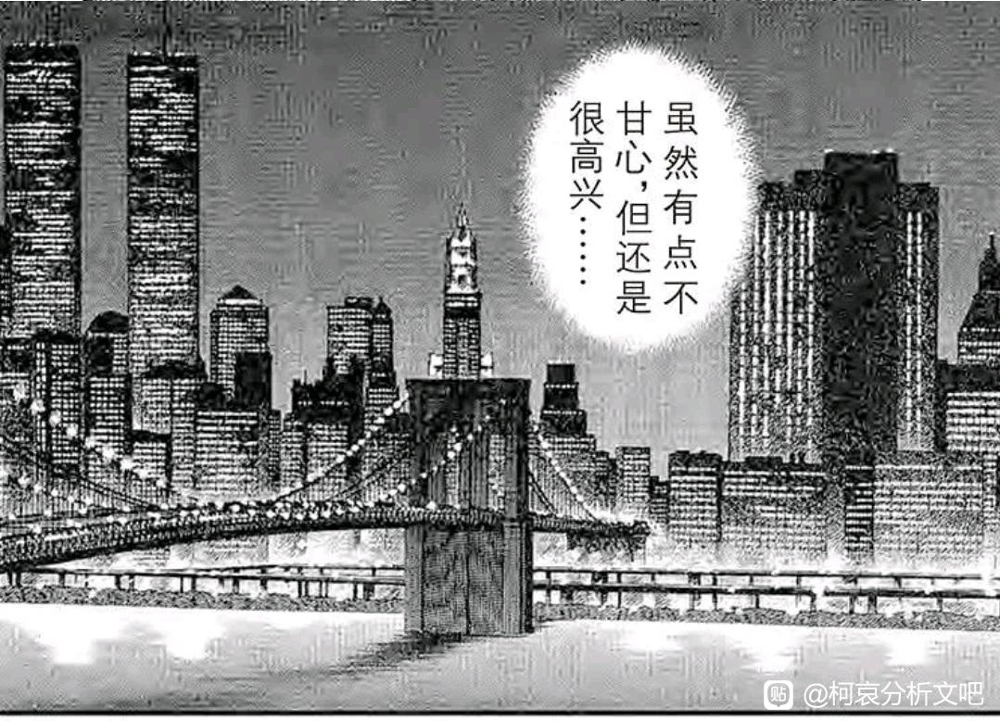

原本我是想把【中华街似曾相识】和【纽约篇】放在“折叠的时空点•叁”里一起讲的，但是我在反复看漫画后，认为有必要单独介绍伦敦篇相关的内容。
先说结论，【贝新论】不可取，【贝魔论】成立，按照青山的说法，纽约篇是为了【引出新一“救人不需要理由”这句话】，但如此伟光正的一句话，大可以用类似【月光案】（不可以用推理将凶手逼上绝路），【外交官案】（推理是没有胜负之分的）或者【暗夜男爵案】（要全力证明自己的好友不是凶手）那样，在案件结束后以非常正面的姿态给出，为什么要设计楼梯遭遇战这样疑点重重的剧情呢？
理由只有一个，那就是“救人不需要理由”这句话并不伟光正。
【这句话并不是新一的核心价值，而是新一在特定情况下对小兰的某种安慰，并为了塑造小兰的形象而服务。】
小兰所喜欢的“救人不需要理由”虽然由新一说出，却并非新一所认同的价值，于是，虽然【贝魔论】没有【贝新论】惊艳，但两者却殊途同归，指向唯一的结果：【你爱的不是他，而是他扮演的天使。】
而传统贝魔论的诸多疑点，包括【雨伞】，【手帕】，【黑白楼梯】等等，我也将在接下来通过漫画分镜的大量细节进行阐述与推演，并形成完全自洽的逻辑回环。
本次推演需要一定空间思维能力，更新可能会比较缓慢，我们将从小兰很不靠谱的记忆出发，以侦探的姿态，逐步发掘纽约篇的真相。
火烧皮斯克镇楼！
先说结论，【贝新论】不可取，【贝魔论】成立，按照青山的说法，纽约篇是为了【引出新一“救人不需要理由”这句话】，但如此伟光正的一句话，大可以用类似【月光案】（不可以用推理将凶手逼上绝路），【外交官案】（推理是没有胜负之分的）或者【暗夜男爵案】（要全力证明自己的好友不是凶手）那样，在案件结束后以非常正面的姿态给出，为什么要设计楼梯遭遇战这样疑点重重的剧情呢？
理由只有一个，那就是“救人不需要理由”这句话并不伟光正。
【这句话并不是新一的核心价值，而是新一在特定情况下对小兰的某种安慰，并为了塑造小兰的形象而服务。】
小兰所喜欢的“救人不需要理由”虽然由新一说出，却并非新一所认同的价值，于是，虽然【贝魔论】没有【贝新论】惊艳，但两者却殊途同归，指向唯一的结果：【你爱的不是他，而是他扮演的天使。】
而传统贝魔论的诸多疑点，包括【雨伞】，【手帕】，【黑白楼梯】等等，我也将在接下来通过漫画分镜的大量细节进行阐述与推演，并形成完全自洽的逻辑回环。
本次推演需要一定空间思维能力，更新可能会比较缓慢，我们将从小兰很不靠谱的记忆出发，以侦探的姿态，逐步发掘纽约篇的真相。
火烧皮斯克镇楼！
cy
2024-03-09 02:52 | 贴吧用户_0Q8721R:贝新论体系下，贝魔论最大的疑点用该是消音器、枪伤、杀人魔举枪，期待一下。2024-03-09 03:00 | 🌐之徙:回复 贴吧用户_0Q8721R :举枪这个我有办法解释，但枪伤好像是有利于贝魔而不利于贝新的证据吧。2024-03-09 03:24 | 贴吧用户_0Q8721R:回复 🌐之徙 :杀人魔肯定腹部有枪伤，但是第二天贝姐打电话的时候并没有和杀人魔一样“按住腹部”。贝姐和杀人魔体型不一样，应该是填充了材料，受伤后也没表现出这一点。所以这个应该是有利于贝新论？2024-03-09 03:36 | 🌐之徙:回复 贴吧用户_0Q8721R :贝姐打电话时还是有稍微按住的（肯定不用向刚受伤那样痛苦地按住），根据满月篇结果，贝姐对阵秀一基本打不过，大概是有一定受伤，穿了防弹衣也没用。2024-03-09 04:19 | 灵13syn777:回复 🌐之徙 :新兰遇到的srm腹部有伤口不止涉及到贝尔摩德，还涉及到真实存在的srm尸体上到底有没有伤口，没有的话为什么新一或警方没意识到问题（新一向警方报告时理应说明srm的情况）？有的话那是怎么造成的？2024-03-09 04:19 | 灵13syn777:回复 🌐之徙 :当时行踪不定的srm又是如何在新一认为的srm的藏身地点（贝魔论下实际是贝尔摩德的藏身地点）被s并被伪装成zs的？2024-03-09 04:20 | 🌐之徙:回复 灵13syn777 :你这两个问题我都能解释，敬请期待2024-03-09 04:42 | nusuaihxi:回复 🌐之徙 :枪伤是最不利于贝魔的，这是因为假如贝尔摩德受了枪伤，赤井秀一作为神枪手当然知道自己打在哪里，子弹造成的伤口如何 那么贝尔摩德在杀杀人魔时能做到还原伤口，骗过赤井秀一吗？有可能，但是这个计划相当的有风险2024-03-09 04:46 | nusuaihxi:回复 nusuaihxi :就好像你用橡胶子弹和用普通子弹造成的伤口完全不同2024-03-09 04:47 | nusuaihxi:回复 灵13syn777 :我认为杀人魔本来就在组织的控制之下，而且组织在FBI肯定有高层卧底，不然不可能知道赤井秀一的行踪2024-03-09 05:02 | 灵13syn777:回复 nusuaihxi :这个问题是，如果srm本来就在组织的控制之下，那贝尔摩德就没必要伪装成srm引出赤井秀一了，直接让真srm引出来就行了2024-03-09 05:16 | nusuaihxi:对，就是让真杀人魔去引赤井秀一，贝尔摩德或者还有别人从旁协助。 贝尔摩德这种人怎么会以身犯险，直面赤井秀一 琴酒从组织那儿听到的说法可能是贝尔摩德为了帮助FBI的那个卧底掩藏身份而故意编造的

问：纽约篇应该追溯到哪个场景？
空中密室？非也，尽管空中密室与纽约篇有直接联系，但两者飞机落地不同，剧情上并无很强的联系，空中密室的状态不影响纽约篇的推演（有一种观点认为，爱德华克洛由贝姐假扮，对此我持反对意见，因为爱德华被搜身了三次，并无任何异常）
白佐相亲？这是应该追溯到的，小兰偶遇秀一，于是开启了有关纽约篇的回忆，但是信息量太少了。
真正的追溯起点，是【太阁城杀人案】，和叶与小兰的对话，【迫使】小兰去回想“自己为什么喜欢新一”这个问题，相比和叶回忆的神采飞扬的服部，小兰回忆中的新一显得有些悲伤，而这个形象的新一正是纽约篇的形象。
因此我认为，小兰关于纽约篇的记忆，事实上是和叶启动的，如果没有和叶对小兰的感情进行点破，小兰似乎不会主动思考这个问题，究竟是为什么呢？这个疑问将在纽约篇结束后得到回答。
空中密室？非也，尽管空中密室与纽约篇有直接联系，但两者飞机落地不同，剧情上并无很强的联系，空中密室的状态不影响纽约篇的推演（有一种观点认为，爱德华克洛由贝姐假扮，对此我持反对意见，因为爱德华被搜身了三次，并无任何异常）
白佐相亲？这是应该追溯到的，小兰偶遇秀一，于是开启了有关纽约篇的回忆，但是信息量太少了。
真正的追溯起点，是【太阁城杀人案】，和叶与小兰的对话，【迫使】小兰去回想“自己为什么喜欢新一”这个问题，相比和叶回忆的神采飞扬的服部，小兰回忆中的新一显得有些悲伤，而这个形象的新一正是纽约篇的形象。
因此我认为，小兰关于纽约篇的记忆，事实上是和叶启动的，如果没有和叶对小兰的感情进行点破，小兰似乎不会主动思考这个问题，究竟是为什么呢？这个疑问将在纽约篇结束后得到回答。
2024-03-09 09:12 | 🌐之徙:如果只想看SRM事件，请跳转第27楼2024-03-10 03:47 | 卷福花生酱酱酱:真是不懂她在“不甘心”什么…….2024-04-08 19:23 | 红茶中的白兰地:回复 卷福花生酱酱酱 :神采飞扬的新一是不需要兰的，他想要的显摆可以从他的粉丝身上得到。 兰认为只有失意沮丧的新一，才会来找自己寻求安慰，只有这种时候，兰才能成为一个新一需要的人2024-04-15 07:13 | 发疯的法师:回复 红茶中的白兰地 :可死罗神的假新一就破防了啊
cy
于是我们确定小兰现阶段的状态：
【喜欢新一且忘记自己为什么喜欢】
【遇见秀一并产生最强烈的印象】
【知道莎朗的存在但没有建立任何联系】
第一点已经由和叶的事情点出来了，第二点【对秀一印象强烈】我们放在最后说，第三点【莎朗的印象】将随着纽约篇的进行而逐步点明。
进入正片：【中华街雨中的似曾相识】
小兰经典学渣行为，不好好学习跑去吃中餐，回家还要看电视，就这情况学习成绩能好就有鬼了。
这里小兰遇到了两个记忆点：【发烧】和【雨】，再加上之前见到了【短发秀一】，小兰终于建立了第一重联系：
【曾经在雨中见过秀一】
【雨中同时还有新一，新一的表情很温柔】
按照小兰的视角，秀一的出场，伴随着“某种东西碎掉的感觉”，这种感觉与云霄飞车后新一去追伏特加一致，故在此可以做一个假设：
【当秀一出现时，小兰意识到新一做出了“追伏特加”行为】
那么有意思的点就出现了，为什么要到秀一出现后，小兰才意识到新一有危险？新一进门时不行吗？
【因为新一+进楼＝捡手帕＝无危险】
【但新一进楼+秀一＝SRM在楼内＝风险很高】
我们先记住这条重要的线索，它能够解释血迹问题和雨伞问题，暂时按下不表。
【喜欢新一且忘记自己为什么喜欢】
【遇见秀一并产生最强烈的印象】
【知道莎朗的存在但没有建立任何联系】
第一点已经由和叶的事情点出来了，第二点【对秀一印象强烈】我们放在最后说，第三点【莎朗的印象】将随着纽约篇的进行而逐步点明。
进入正片：【中华街雨中的似曾相识】
小兰经典学渣行为，不好好学习跑去吃中餐，回家还要看电视，就这情况学习成绩能好就有鬼了。
这里小兰遇到了两个记忆点：【发烧】和【雨】，再加上之前见到了【短发秀一】，小兰终于建立了第一重联系：
【曾经在雨中见过秀一】
【雨中同时还有新一，新一的表情很温柔】
按照小兰的视角，秀一的出场，伴随着“某种东西碎掉的感觉”，这种感觉与云霄飞车后新一去追伏特加一致，故在此可以做一个假设：
【当秀一出现时，小兰意识到新一做出了“追伏特加”行为】
那么有意思的点就出现了，为什么要到秀一出现后，小兰才意识到新一有危险？新一进门时不行吗？
【因为新一+进楼＝捡手帕＝无危险】
【但新一进楼+秀一＝SRM在楼内＝风险很高】
我们先记住这条重要的线索，它能够解释血迹问题和雨伞问题，暂时按下不表。
2024-03-09 12:23 | 成冰的雨点:我的思考没有作者这么深，就是觉得，天使lan不适合新一当然没得跑，可是难道她就配得上秀一了吗？也许整部名柯里唯一适合她而且喜欢她的也就本堂瑛佑了2024-04-03 21:29 | 我有嘉賓00:回复 成冰的雨点 :秀一拿她来寄托未亡人的思念罢了
前排
带着各种疑问，小兰走进餐厅，由于餐券不在日期而被拒绝服务，小兰直接就开打（这也太暴躁了）
这里的塑造是别有深意的，如果为了展示小兰的武力（并被里面的导演看中），有更正面的方法，再来一个吊灯坠落，然后小兰救众人于水火之中不就行了，还能顺势引出小兰的记忆。
但并没有，小兰展示的形象是很暴力的，仿佛这已经预示着小兰纽约篇前后的变化，当时她会因为“救了杀人犯”而有些自责，但现在的小兰却是动辄使用暴力而不必有多愧疚的人。
究竟是前一个小兰好些，还是后一个小兰好些？
接下来导演招呼他们吃饭，编剧也是语出惊人，对着乱改剧本的制片人各种嘲讽（这段属于场外，不过多分析）
一种观点认为，小兰的职业可能是演员，理由就是这里被导演看中，对此我表示严重怀疑，小兰本身不想去，而小五郎和柯南则因为“可以去世界各地/可以见到足球明星”而在旁边起哄，但又因为“恋爱情节”而打退堂鼓（再来一次学园祭是真的受不了），怎么看小兰与演员的适配度都不高，何况小兰并无多少演技，只是身手较好而已。
小兰【演技好】与【学霸】之类不符合实际的人设还是尽早丢弃为好吧。
这里的塑造是别有深意的，如果为了展示小兰的武力（并被里面的导演看中），有更正面的方法，再来一个吊灯坠落，然后小兰救众人于水火之中不就行了，还能顺势引出小兰的记忆。
但并没有，小兰展示的形象是很暴力的，仿佛这已经预示着小兰纽约篇前后的变化，当时她会因为“救了杀人犯”而有些自责，但现在的小兰却是动辄使用暴力而不必有多愧疚的人。
究竟是前一个小兰好些，还是后一个小兰好些？
接下来导演招呼他们吃饭，编剧也是语出惊人，对着乱改剧本的制片人各种嘲讽（这段属于场外，不过多分析）
一种观点认为，小兰的职业可能是演员，理由就是这里被导演看中，对此我表示严重怀疑，小兰本身不想去，而小五郎和柯南则因为“可以去世界各地/可以见到足球明星”而在旁边起哄，但又因为“恋爱情节”而打退堂鼓（再来一次学园祭是真的受不了），怎么看小兰与演员的适配度都不高，何况小兰并无多少演技，只是身手较好而已。
小兰【演技好】与【学霸】之类不符合实际的人设还是尽早丢弃为好吧。
2024-03-09 04:19 | 贴吧用户_QU2KPRP:看中小兰的这帮子人也不是啥正经人。 京极真当替身的剧组虽然也发生了杀人案，但好歹是个正经拍戏的剧组。 和新出演剧那次，一点随机应变能力都没有，在台上看提示、说小话，离正经演出差十万八千里呢。2024-03-09 11:36 | 贴吧用户_G7QD9XD:回复 🌐之徙 :∠➗还说兰以后当女演员女明星，先不说兰平时表现就是缺根筋半吊子，连演员最基本的保密都做不到，天天泄密还乱传八卦。都是梦女带入罢了，要现实里这样的演员不是违反保密协议就是八卦绯闻频出。2024-03-09 19:28 | 贴吧用户_0bDS2EM:再往前一页会发现是小五郎不让对面说话才导致来了个大个的服务员的
柯南注意到小兰生病，于是希望小兰赶紧回家休息一下（这里可以发现，柯南对生病的小兰是很照顾的，一想到外交官案小兰放着生病的新一+柯南不管，跑去凝视服部，我就为柯南感到深深的不公）
从整部作品看，小兰生病的时间非常少，一旦发烧那晕倒是早晚的事情，此处柯南【知道】小兰发烧后会晕倒，算是贝魔论的一个有利证据，如果是贝新论，则柯南并不容易确定小兰是发烧晕倒还是吓倒了。（当然，这个证据是不充分的）
另外有一个对比，小哀轻微中暑时，柯南一直照顾她，后来生病更是直接照顾一个暑假。但是小兰本次生病时，是横沟弟弟进行的急救，柯南安顿好小兰该破案就破案，只要小兰说她没事他就真当小兰没事（！），也许外交官案小兰令人寒心的举动，并不是没有影响的哦。
从整部作品看，小兰生病的时间非常少，一旦发烧那晕倒是早晚的事情，此处柯南【知道】小兰发烧后会晕倒，算是贝魔论的一个有利证据，如果是贝新论，则柯南并不容易确定小兰是发烧晕倒还是吓倒了。（当然，这个证据是不充分的）
另外有一个对比，小哀轻微中暑时，柯南一直照顾她，后来生病更是直接照顾一个暑假。但是小兰本次生病时，是横沟弟弟进行的急救，柯南安顿好小兰该破案就破案，只要小兰说她没事他就真当小兰没事（！），也许外交官案小兰令人寒心的举动，并不是没有影响的哦。
2024-03-09 06:00 | 爱吃宾:《知道》不能作为任何证据，因为小兰发烧晕倒后，如果贝姐抱着小兰把他送到有希子面前，有希子和新一也自然会知道发烧晕倒了。事实上说小兰记忆不准确是有失偏颇的，她在纽约晕倒后就失忆了，在记忆复原这一段时间之间，新一一直没有和她谈过关于杀人魔的事，小兰所了解到的杀人魔本身就是片面的。2024-03-09 06:25 | 🌐之徙:回复 爱吃宾 :这算是倾向贝魔论的证据，并不是决定性的，你的贝新论额外增加了贝姐送回小兰的桥段，该桥段更弱而且无漫画支撑。2024-03-09 06:40 | 爱吃宾:回复 🌐之徙 :“新一”刚说完下次碰到绝不轻饶，紧接着就是第二天贝姐和有希子的电话，中间没有任何过渡，给我的感觉就是大人送生病的小孩子回家，第二天给家长打电话询问孩子的病情。2024-03-09 06:40 | 爱吃宾:回复 🌐之徙 :而且有希子紧接着就打了“新一”的脸，当天真新一就报了警，与所谓的下次见面绝不轻饶的立场矛盾。以上内容都出现在同一页。2024-03-09 06:41 | 灵13syn777:回复 🌐之徙 :就算不以贝尔摩德送回兰作为前提，看到晕倒的兰判断兰发烧只要摸下额头就行，不是非要看到兰晕倒的瞬间2024-03-09 06:52 | 🌐之徙:回复 爱吃宾 :【报警】的问题我之后会解释，那个“感觉是送生病的小孩回家”不太靠谱，如果是真新一送小兰回家也说的通，属于两边都能用的证据。2024-03-09 06:54 | 🌐之徙:回复 灵13syn777 :所以不是决定性证据，只是倾向性证据嘛，因为柯南的话里，是有“烧得晕倒”的成分在的，更应该是亲眼看见过小兰烧晕。2024-03-09 19:30 | 贴吧用户_0bDS2EM:话说一发烧就昏倒是体质问题了吧
接下来的聊天中，小兰又获得两个记忆点；【聊天中提及莎朗】与【横沟弟弟的怒视】，前者帮小兰回忆到莎朗的出现，后者帮小兰确定了秀一的情绪，并且共同构成了【新一说了什么】，值得注意的是，秀一的形象仍然是三者中最完备的，据此可以继续下结论：
【对小兰而言，冲击性最强的时刻是与秀一的对峙，而非新一的话语，她很容易忘记新一的话，却能想起秀一是“愤怒的”】
我这里并不是在说秀兰有任何特殊关系，但仅就纽约篇而言，小兰视角内，秀一的存在感的确比新一要高得多，我这里做一个相对大胆的假设：
【秀一在纽约篇做出了整个名柯没有人对小兰做过的事情，即“责备小兰”】
因为小兰在纽约篇，有小兰无法否认的“过错”。
这些按下不表，回到现实，柯南“要尽快送小兰去医院”，但我看柯南也不怎么上心，正常来讲就该直接跟横沟说一下，但是柯南注意力又被案件吸引走了。
不可否认，柯南对生病小兰的照顾是远高于小兰对生病柯南的照顾的，但是也没高多少，与小哀的寒假照顾完全不能比较。小兰后来说的“（对小哀）我都有点嫉妒了”，其根源就在本案，柯南对不同的人关心程度大不相同，不是无原则的一视同仁（这又与新一那句“救人不需要理由“违背，松本小百合把柯南当代餐，柯南就用心救，小兰把服部当代餐，柯南就不那么用心，小哀把柯南当成“？”，于是柯南直接搬到博士家照顾小哀）
【对小兰而言，冲击性最强的时刻是与秀一的对峙，而非新一的话语，她很容易忘记新一的话，却能想起秀一是“愤怒的”】
我这里并不是在说秀兰有任何特殊关系，但仅就纽约篇而言，小兰视角内，秀一的存在感的确比新一要高得多，我这里做一个相对大胆的假设：
【秀一在纽约篇做出了整个名柯没有人对小兰做过的事情，即“责备小兰”】
因为小兰在纽约篇，有小兰无法否认的“过错”。
这些按下不表，回到现实，柯南“要尽快送小兰去医院”，但我看柯南也不怎么上心，正常来讲就该直接跟横沟说一下，但是柯南注意力又被案件吸引走了。
不可否认，柯南对生病小兰的照顾是远高于小兰对生病柯南的照顾的，但是也没高多少，与小哀的寒假照顾完全不能比较。小兰后来说的“（对小哀）我都有点嫉妒了”，其根源就在本案，柯南对不同的人关心程度大不相同，不是无原则的一视同仁（这又与新一那句“救人不需要理由“违背，松本小百合把柯南当代餐，柯南就用心救，小兰把服部当代餐，柯南就不那么用心，小哀把柯南当成“？”，于是柯南直接搬到博士家照顾小哀）
赶上直播了
cy
于是，在【忽视生病的小兰】的情况下，案件顺利告破，本案的犯人是一位导演，他的作案动机可以和纽约篇女犯人做一个对照，对于女犯人而言是“爱上他所扮演的天使”，那么这位男犯人呢？“目不转睛盯着女主角看，就会迷上女主角，不管她的表演有多烂……”
没错，虽然很残忍，但这两段话正是新兰关系的写照，这个导演的理由明显是不用那么麻烦的，直接说他爱上女主角就好了，但偏不，偏要设置女主角其实演的很烂这一剧情，这就是柯南视角下的小兰，虽然有大量的问题（见折叠的时空零），但还是会自认为喜欢她，原因无非是朝夕相处，把对方的行为都合理化了。
那么，如果存在另一个女主角，同时也看着这位导演呢？于是情况发生了变化，导演的视角局限被打破了，这就是另一个属于柯哀的故事了。
对吧，柯导？
没错，虽然很残忍，但这两段话正是新兰关系的写照，这个导演的理由明显是不用那么麻烦的，直接说他爱上女主角就好了，但偏不，偏要设置女主角其实演的很烂这一剧情，这就是柯南视角下的小兰，虽然有大量的问题（见折叠的时空零），但还是会自认为喜欢她，原因无非是朝夕相处，把对方的行为都合理化了。
那么，如果存在另一个女主角，同时也看着这位导演呢？于是情况发生了变化，导演的视角局限被打破了，这就是另一个属于柯哀的故事了。
对吧，柯导？
cy
支持，贝新论扯的很
贝新论就像极端若朗的厨子务武论
贝新论就像极端若朗的厨子务武论
这位导演关于“上帝”的话是小兰的第三次记忆点，帮她补全了莎朗的台词，顺带地补全了新一和秀一的台词。
不少人认为，小兰设想的画面中【真的有上帝吗】这句话（带着大黑框）与新一分在一起，据此一些人认为是【小兰听到新一说出女声】并认为这是【贝新论】强证据，这个说法不太有道理，仅在前一次画面中，与新一同框的大黑框里就是柯南的声音，这种大黑框本身就是在表达话外音的效果，反而更加不能说明新一是贝姐，相反则可以说明另一个事实。
【当小兰凝视着这个让她心动的新一时，她想到的是莎朗的“真的有上帝吗？”，小兰的回答是真的有，因为新一在她最不安时看穿了她的内心，并且安慰了她（哪怕新一事实上并没有这个主动意识）】
此刻，小兰的记忆已经能够锁定纽约篇，只是具体场景还需要想象，值得注意的是，此刻小兰记忆的重心仍然是秀一，【原来就是在那个地方（和新一一起去的地方）见到秀一的】，新一变成了定语，重点仍然在秀一身上。
【明意识里，新一是小兰的上帝，潜意识里，秀一才是那个点醒她的人。】
以上的结论将在纽约篇中进一步证明。
不少人认为，小兰设想的画面中【真的有上帝吗】这句话（带着大黑框）与新一分在一起，据此一些人认为是【小兰听到新一说出女声】并认为这是【贝新论】强证据，这个说法不太有道理，仅在前一次画面中，与新一同框的大黑框里就是柯南的声音，这种大黑框本身就是在表达话外音的效果，反而更加不能说明新一是贝姐，相反则可以说明另一个事实。
【当小兰凝视着这个让她心动的新一时，她想到的是莎朗的“真的有上帝吗？”，小兰的回答是真的有，因为新一在她最不安时看穿了她的内心，并且安慰了她（哪怕新一事实上并没有这个主动意识）】
此刻，小兰的记忆已经能够锁定纽约篇，只是具体场景还需要想象，值得注意的是，此刻小兰记忆的重心仍然是秀一，【原来就是在那个地方（和新一一起去的地方）见到秀一的】，新一变成了定语，重点仍然在秀一身上。
【明意识里，新一是小兰的上帝，潜意识里，秀一才是那个点醒她的人。】
以上的结论将在纽约篇中进一步证明。
这里小兰已经补全大部分记忆了，而最后的记忆碎片就是横沟弟弟超大声的【跨海大桥】，至此小兰能够从桥上的飙车开始向后推演，并最终得出了相对正确的，为什么喜欢“新一”的结论，这是一个与和叶完全不同的结论，不是“闪闪发光的样子”，而是【虽然不甘心，但是新一拯救了我】
问题是，新一真的拯救了她吗？还是她以为自己被拯救了呢？恐怕是后者的可能性更大，新一在纽约篇，主观上是安慰而非拯救，客观上也没有拯救成功，小兰终究还是爱上了新一所不存在的性质，一种并非“干净的香味”，而是精心包装的“虚无的正义感”（被小哀否定）的特质。
入梦，进入纽约篇，先说我的结论，小兰所记住的所有场景（即读者眼中的场景），【几乎】都是正确的场景，但是顺序未必一致，并且小兰的理解也未必与真实场景相同，这是我限定的大前提，如果没有这个前提，就容易让分析放飞自我，虽然有助于拓展思路，但说服力就不太够了。
下面，我们进入一年前的纽约，看看小兰视角下的两个案件究竟有什么秘密吧。
问题是，新一真的拯救了她吗？还是她以为自己被拯救了呢？恐怕是后者的可能性更大，新一在纽约篇，主观上是安慰而非拯救，客观上也没有拯救成功，小兰终究还是爱上了新一所不存在的性质，一种并非“干净的香味”，而是精心包装的“虚无的正义感”（被小哀否定）的特质。
入梦，进入纽约篇，先说我的结论，小兰所记住的所有场景（即读者眼中的场景），【几乎】都是正确的场景，但是顺序未必一致，并且小兰的理解也未必与真实场景相同，这是我限定的大前提，如果没有这个前提，就容易让分析放飞自我，虽然有助于拓展思路，但说服力就不太够了。
下面，我们进入一年前的纽约，看看小兰视角下的两个案件究竟有什么秘密吧。

首先是这一部分，有希子飙车之后小兰对着新一怒吼，这里我并不认为有希子会对小兰有多大的意见（只是心里减了一些分），此刻有希子不认识小哀和三小只，她似乎还没有找到飙车的受众，因此飙车停止后，有希子选择“向小兰解释”而非其他的冷漠态度。
但是，【小兰对有希子很有意见】，我们注意，当有希子向小兰解释飙车时，【小兰直接侧头不听】，这里小兰的侧头也可以解释为看聚集的路人，但无论如何，对着长辈表示不听她说话的态度，无论如何都是表示一种不服/不满，小兰在外人面前说自己的偶像是有希子和莎朗，但是真正遇到有希子就只会叫“新一的妈妈”，根本不像有希子的粉丝。（作为对比，见到莎朗的时候直接“我真感谢上帝”），似乎小兰对有希子一直有些意见，【先于伦敦篇有希子对小兰产生很大的意见】。
这种意见似乎来源于家庭，每次和新一出去玩，回来就会被妃英理认为“有希子是怎么管孩子的balabala”，这显然让小兰对有希子存在“新一的妈妈不靠谱”这种负面印象，并最终通过这场飙车表现了出来。（恐怕还要包括落叶缤纷的质问，飙车还只吼新一，落叶缤纷时直接对着有希子各种大呼小叫）
于是小兰为自己创造了“有希子不守婆德”的隐患。
但是，【小兰对有希子很有意见】，我们注意，当有希子向小兰解释飙车时，【小兰直接侧头不听】，这里小兰的侧头也可以解释为看聚集的路人，但无论如何，对着长辈表示不听她说话的态度，无论如何都是表示一种不服/不满，小兰在外人面前说自己的偶像是有希子和莎朗，但是真正遇到有希子就只会叫“新一的妈妈”，根本不像有希子的粉丝。（作为对比，见到莎朗的时候直接“我真感谢上帝”），似乎小兰对有希子一直有些意见，【先于伦敦篇有希子对小兰产生很大的意见】。
这种意见似乎来源于家庭，每次和新一出去玩，回来就会被妃英理认为“有希子是怎么管孩子的balabala”，这显然让小兰对有希子存在“新一的妈妈不靠谱”这种负面印象，并最终通过这场飙车表现了出来。（恐怕还要包括落叶缤纷的质问，飙车还只吼新一，落叶缤纷时直接对着有希子各种大呼小叫）
于是小兰为自己创造了“有希子不守婆德”的隐患。
2024-04-02 11:08 | 明矾饭团拼盘🐯:这里兰的观感真的好差啊，就特别像是那种欺软怕硬的人……简单点是没礼貌，再就是这个时候我感觉她还没有喜欢新一，所以她不在乎这种时刻，就是她其实根本没那么想过要在有希子面前表现好的自己，而且有希子点出来之后，她也选择躲在新一身后尴尬，而不是自己独自面对尴尬思考缓解2024-04-17 01:52 | 洛菲斯♬:兰对有希子可能有些心虚，小时候黏着新一和冤枉新一带自己出去玩，让新一被妃英理打骂，受了不少罪。
接着有希子等人碰到了变装成拉迪修的莎朗。这里有一个镜头，莎朗只穿了半边男装，我们可以清楚地看见，莎朗这件外套与SRM外套是很相似的，同样是灰色并且前面有个扣字，同样侧面有口袋，SRM的衣服没有扣上但拉迪修扣上了，我感觉这就是同一件，可以说明莎朗本来就有变装成SRM的准备。
那么，莎朗为什么要在这里变装成拉迪修呢？恐怕是为了让有希子尽快进入剧场，不论【阻止萝丝杀人】或者【在萝丝杀人后迅速破案】都是莎朗可以接受的，为此莎朗承担了衣服暴露的微小风险，换来与秀一对阵时旁边没有其他警察，应该说是值得的。
相比之下，新一的衣服复杂得多，很难准备，而真正拉迪修是一套完整西装，莎朗也并没有真的准备全部西装（只有外套），各类“莎朗本来想假装拉迪修，被用掉了所以得假装新一”的假说其实都不太靠谱，从目前的漫画看，莎朗用这件外套，弄脏点去假扮SRM仍然是最有可能的。
那么，莎朗为什么要在这里变装成拉迪修呢？恐怕是为了让有希子尽快进入剧场，不论【阻止萝丝杀人】或者【在萝丝杀人后迅速破案】都是莎朗可以接受的，为此莎朗承担了衣服暴露的微小风险，换来与秀一对阵时旁边没有其他警察，应该说是值得的。
相比之下，新一的衣服复杂得多，很难准备，而真正拉迪修是一套完整西装，莎朗也并没有真的准备全部西装（只有外套），各类“莎朗本来想假装拉迪修，被用掉了所以得假装新一”的假说其实都不太靠谱，从目前的漫画看，莎朗用这件外套，弄脏点去假扮SRM仍然是最有可能的。
2024-03-09 08:15 | Narkoah:贝尔摩德装警官的时候穿的是大衣类型的衣服，而srm穿的是夹克类型的。领口以及衣服长度和样式都差太多了。2024-03-09 08:34 | 🌐之徙:回复 南柯一哀 :我的感觉是确实有差异但没那么明显，即使是不同的衣服，也可以理解为贝姐准备了多套（备用），要适合SRM且第一时间不容易看出区别， 也可能是我截图导致了像素压缩
通过情景推演，小兰回忆了莎朗的重要片段【天使从来没有对我微笑】
莎朗称小兰为天使，对贝姐而言，天使是【在明知对方是传统意义上的坏人时，仍能对ta露出微笑的人】，有希子不行，因为有希子还不知道贝姐的身份；爱莲娜似乎不行，我合理认为爱莲娜在得知贝姐是杀人犯后，就不再对她微笑了（之前可能相处得很好）
因此，贝姐是渴望并珍惜出现在她身边的天使的，但这样的天使对于红方而言无疑是恶魔，贝姐获得天使后，有没有停止犯罪活动呢？没有！她只是不让天使看到犯罪而已。
举个最显著的例子，贝姐试图谋杀新出一家，并以为谋杀成功了，如果没有朱蒂，则小兰救下的贝姐将在一年后击杀小兰真正爱过的新出智明。
贝姐所追求的天使，事实上很难出现，但还真的出现了，就是小兰，但又不只是小兰，【如果没有新一的逻辑支撑，小兰仍然不是天使】，相当于是新一让小兰有成为贝姐天使的可能性。
（以上的结论将在对阵SRM时被使用）
莎朗称小兰为天使，对贝姐而言，天使是【在明知对方是传统意义上的坏人时，仍能对ta露出微笑的人】，有希子不行，因为有希子还不知道贝姐的身份；爱莲娜似乎不行，我合理认为爱莲娜在得知贝姐是杀人犯后，就不再对她微笑了（之前可能相处得很好）
因此，贝姐是渴望并珍惜出现在她身边的天使的，但这样的天使对于红方而言无疑是恶魔，贝姐获得天使后，有没有停止犯罪活动呢？没有！她只是不让天使看到犯罪而已。
举个最显著的例子，贝姐试图谋杀新出一家，并以为谋杀成功了，如果没有朱蒂，则小兰救下的贝姐将在一年后击杀小兰真正爱过的新出智明。
贝姐所追求的天使，事实上很难出现，但还真的出现了，就是小兰，但又不只是小兰，【如果没有新一的逻辑支撑，小兰仍然不是天使】，相当于是新一让小兰有成为贝姐天使的可能性。
（以上的结论将在对阵SRM时被使用）
（这里不涉及贝姐的母亲是否存在的讨论，这类讨论只能等主线进展，我认为即使贝姐母亲存在，贝姐也完整继承了母亲的记忆，就像人鱼岛一样）
这里，演员们称有希子为“暗夜男爵夫人”，小兰对此并不感兴趣（小兰是读过暗夜男爵小说的，但是她的性格与父亲一致，都认为书里的就是书里的）
此刻有希子对小兰仍然抱有期待，但并不多，用了“could”这种最轻的预期以形容新兰关系，要知道静华可是让平和直接去参加某朋友的婚礼了，有希子与小兰的关系却仿佛陌生人一样，连暗夜男爵夫人这个家喻户晓的外号都不知道，其雷点程度大概类似于柯南不知道小五郎是“沉睡的小五郎”。（虽然是不可能的）
这里，演员们称有希子为“暗夜男爵夫人”，小兰对此并不感兴趣（小兰是读过暗夜男爵小说的，但是她的性格与父亲一致，都认为书里的就是书里的）
此刻有希子对小兰仍然抱有期待，但并不多，用了“could”这种最轻的预期以形容新兰关系，要知道静华可是让平和直接去参加某朋友的婚礼了，有希子与小兰的关系却仿佛陌生人一样，连暗夜男爵夫人这个家喻户晓的外号都不知道，其雷点程度大概类似于柯南不知道小五郎是“沉睡的小五郎”。（虽然是不可能的）
接着小兰从掉落的盔甲下救了本案的凶手，对此，莎朗不置可否，再一次表明自己对“天使”的定义，即必须要明知对方是坏人还拯救对方才行。
这里我们着重注意莎朗后来的几句话，【今晚有好戏看了】与【我要先去阻止】，事实上，莎朗除了把有希子请过来外，并没有阻止本案凶手的行动，我认为莎朗此时离开，就是准备以杀人魔身份在外乱杀一下（之前应该杀过好几次了），吸引秀一出现并准备把秀一干掉（有算对无算，秀一虽然很强但也有翻车可能，更重要的是，杀秀一是BOSS的命令，贝姐不可以不听），所谓“我要先去阻止”则是对剧场动向的预防针，如果没有命案则“阻止成功”，如果命案发生则“我觉得不对劲但没想到她敢杀人”，总之，莎朗做好了全面的准备。
以下是额外的脑洞：
这个手帕鼓了一点点，是否存在发信装置？方便贝姐找到新兰所在的大楼？没错，不是新兰找到SRM的大楼，而是贝姐找到新兰的大楼。即使手帕里没有发信器也没关系，那就是巧合遇到了新兰，但如果有发信器，那就说明贝姐希望用一个实验，看看小兰是不是真正的天使（两者都说的通，但都是贝魔论）
如果是贝新论，那么贝姐就要去阻止真正的SRM，问题是有必要吗？对方已经被秀一团团包围，贝姐变成无条件救小兰了，bug将会更多。
这里我们着重注意莎朗后来的几句话，【今晚有好戏看了】与【我要先去阻止】，事实上，莎朗除了把有希子请过来外，并没有阻止本案凶手的行动，我认为莎朗此时离开，就是准备以杀人魔身份在外乱杀一下（之前应该杀过好几次了），吸引秀一出现并准备把秀一干掉（有算对无算，秀一虽然很强但也有翻车可能，更重要的是，杀秀一是BOSS的命令，贝姐不可以不听），所谓“我要先去阻止”则是对剧场动向的预防针，如果没有命案则“阻止成功”，如果命案发生则“我觉得不对劲但没想到她敢杀人”，总之，莎朗做好了全面的准备。
以下是额外的脑洞：
这个手帕鼓了一点点，是否存在发信装置？方便贝姐找到新兰所在的大楼？没错，不是新兰找到SRM的大楼，而是贝姐找到新兰的大楼。即使手帕里没有发信器也没关系，那就是巧合遇到了新兰，但如果有发信器，那就说明贝姐希望用一个实验，看看小兰是不是真正的天使（两者都说的通，但都是贝魔论）
如果是贝新论，那么贝姐就要去阻止真正的SRM，问题是有必要吗？对方已经被秀一团团包围，贝姐变成无条件救小兰了，bug将会更多。
2024-03-09 08:24 | 灵13syn777:回复 🌐之徙 :这里“我要先去阻止”是翻译问题，正常翻译是“我临时有事要停下现在干的事情，今晚有好戏看”2024-03-09 08:29 | 🌐之徙:回复 灵13syn777 :感谢补充2024-04-29 01:39 | 上総守信長ºº:那这句就没有任何信息量了
原文是「止め」，这里应该读成やめ（放弃），翻译的人读成了とめ（阻止）
接下来我们来分析一下，案件过程中小兰的表现：
本案小兰做出了整部名柯独一无二的行为：向陌生警官推销新一的推理能力，说他“和福尔摩斯一样”，很可惜，这是在新一已经实际在侦破案件时，小兰后补的推销，但它仍然属于对新一能力的一种信任。
无疑，新一破案时帅气的样子还是吸引小兰的，但这种吸引，充其量是外表上的吸引，却不是对内核的认同，我们可以看到，警官和有希子都被新一的推理所折服，但小兰根本没有跟上新一推理的脚步，她只是有些花痴地看着新一而已，更具杀伤力的是，【小兰不会因为这点而喜欢新一】，小哀第一次听到柯南的推理，就卸下了她的伪装，但小兰毫无波动。
当新一成为小兰“喜欢的人”之后，小兰对新一破案的支持反而消失了，取而代之的是以推理狂为首的各种称号，在几乎所有人面前贬低新一的推理能力并说他是只会推理的呆子。（充分说明推理不是小兰喜欢的事，当推理阻碍了小兰真正喜欢新一的点，小兰就会转而彻底讨厌推理，就像大阪3K事件小兰对新一的描述一样）
小兰对新一的支持仅仅在这一案出现，这是一个特殊的时刻，小兰尚未喜欢新一，且新一恰成为真正的侦探（意味着不会出丑！小兰不用像空中密室那样担心新一出错！），于是形成了极为偶然的鼎力支持。
小兰的行为与名柯所有CP“先事业后爱情”的理念完全违背！这大概就是新兰独特而没有未来的塑造吧。
本案小兰做出了整部名柯独一无二的行为：向陌生警官推销新一的推理能力，说他“和福尔摩斯一样”，很可惜，这是在新一已经实际在侦破案件时，小兰后补的推销，但它仍然属于对新一能力的一种信任。
无疑，新一破案时帅气的样子还是吸引小兰的，但这种吸引，充其量是外表上的吸引，却不是对内核的认同，我们可以看到，警官和有希子都被新一的推理所折服，但小兰根本没有跟上新一推理的脚步，她只是有些花痴地看着新一而已，更具杀伤力的是，【小兰不会因为这点而喜欢新一】，小哀第一次听到柯南的推理，就卸下了她的伪装，但小兰毫无波动。
当新一成为小兰“喜欢的人”之后，小兰对新一破案的支持反而消失了，取而代之的是以推理狂为首的各种称号，在几乎所有人面前贬低新一的推理能力并说他是只会推理的呆子。（充分说明推理不是小兰喜欢的事，当推理阻碍了小兰真正喜欢新一的点，小兰就会转而彻底讨厌推理，就像大阪3K事件小兰对新一的描述一样）
小兰对新一的支持仅仅在这一案出现，这是一个特殊的时刻，小兰尚未喜欢新一，且新一恰成为真正的侦探（意味着不会出丑！小兰不用像空中密室那样担心新一出错！），于是形成了极为偶然的鼎力支持。
小兰的行为与名柯所有CP“先事业后爱情”的理念完全违背！这大概就是新兰独特而没有未来的塑造吧。
cy
小兰的支持可谓“色厉胆薄”，一方面支持他查案，另一方面……大家自行体会：
小兰缺乏在案发现场的参与感，其表现要么是“啊？”，要么是被新一当工具人用来量身高（小兰全程只因为和新一接触而脸红，根本不知道新一要做什么，也不听推理），最后来一句“快走不然要被骂惨了……”
？？？
不是你推荐新一破案的吗？
合着新一一时间没法破案就得赶紧向警官认错是吧💔💔
这就是小兰【最支持】新一的时候，我都看笑了，即使是柯哀吵架的蓝色火花案，小哀照样完全理解柯南的所有推理和指令（并且投来半月眼），我只看到了小兰在本案中根本不重视推理，一直挂着红晕享受与新一接触的样子（此时小兰还没有喜欢新一），说她“色厉胆薄”好像还真没错。
小兰缺乏在案发现场的参与感，其表现要么是“啊？”，要么是被新一当工具人用来量身高（小兰全程只因为和新一接触而脸红，根本不知道新一要做什么，也不听推理），最后来一句“快走不然要被骂惨了……”
？？？
不是你推荐新一破案的吗？
合着新一一时间没法破案就得赶紧向警官认错是吧💔💔
这就是小兰【最支持】新一的时候，我都看笑了，即使是柯哀吵架的蓝色火花案，小哀照样完全理解柯南的所有推理和指令（并且投来半月眼），我只看到了小兰在本案中根本不重视推理，一直挂着红晕享受与新一接触的样子（此时小兰还没有喜欢新一），说她“色厉胆薄”好像还真没错。
丢脸的是“你妈妈”？最害怕丢脸的恐怕是小兰自己吧，小兰直到柯南元年【滑雪别墅案】才克服名气大影响，这里的抱怨弄得轮到新一“啊？”了。
……小兰和新一查案查了一路！
……小兰从头到尾都在质疑新一的推理！仿佛没有一起查案一样。
只能说新一也是好脾气，还耐心地又给小兰讲解了所有的案件细节（小兰应该是记住了，不容易啊），新一绝对不会想到，一年之后变小的他反而拥有更好的破案体验。
也许有人会觉得，这里是剧情需要，所以让小兰扮演了“笨蛋华生”的角色，对推理抱有各种疑问，但笨蛋华生也得先是华生啊（至少得有小五郎级别的推理才行）💔真要这么做，让那位美国目暮和有希子对话就行了，因此这一段完全就是为了塑造小兰对推理毫无兴趣的人物形象。小兰的质疑包括：
【如果错了，你妈妈会丢脸！】（总起）
【我根本不相信那四个人会是凶手】（质疑四选一）
【我根本没发现地下装置，只看到一块铁板】（新一都当着你的面掀开铁板了啊！）
【为什么工作人员要告诉萝丝？】（简单推理）
【那把枪呢？】（简单推理）
【怎么把枪从高处扔下来？】（简单推理）
【可是新一，你是什么时候发现血手印的？】（比较复杂的推理）
【动机？】（超级明显）
从头到尾质疑了一个遍，跟着新一查案查了个寂寞，而这种表现真的很好了！哪有一个别的案子能让小兰问出这么多问题啊💔
……小兰和新一查案查了一路！
……小兰从头到尾都在质疑新一的推理！仿佛没有一起查案一样。
只能说新一也是好脾气，还耐心地又给小兰讲解了所有的案件细节（小兰应该是记住了，不容易啊），新一绝对不会想到，一年之后变小的他反而拥有更好的破案体验。
也许有人会觉得，这里是剧情需要，所以让小兰扮演了“笨蛋华生”的角色，对推理抱有各种疑问，但笨蛋华生也得先是华生啊（至少得有小五郎级别的推理才行）💔真要这么做，让那位美国目暮和有希子对话就行了，因此这一段完全就是为了塑造小兰对推理毫无兴趣的人物形象。小兰的质疑包括：
【如果错了，你妈妈会丢脸！】（总起）
【我根本不相信那四个人会是凶手】（质疑四选一）
【我根本没发现地下装置，只看到一块铁板】（新一都当着你的面掀开铁板了啊！）
【为什么工作人员要告诉萝丝？】（简单推理）
【那把枪呢？】（简单推理）
【怎么把枪从高处扔下来？】（简单推理）
【可是新一，你是什么时候发现血手印的？】（比较复杂的推理）
【动机？】（超级明显）
从头到尾质疑了一个遍，跟着新一查案查了个寂寞，而这种表现真的很好了！哪有一个别的案子能让小兰问出这么多问题啊💔
2024-04-04 06:57 | 我有嘉賓00:纽约宋老虎：年轻人不要太气盛！ 新一：不气盛是年轻人吗？
言归正传，本案的动机十分凶恶，正好映射小兰对新一的感情，把他当做无所不能的，能够随时关心他的神，喜欢的是这个设想中的新一形象而不是真实的新一，【当形象不再满足时，就杀了他让他保持现有的形象】
云霄飞车是小兰梦碎的开始，此时的新一获得了巨大的名声，不再为小兰而停留脚步，小兰的眼泪也不再得到新一的同情，最终琴酒替小兰完成了【让新一保持美好形象】的目标，将之变小，从此小兰可以欺骗自己新一还是那个新一。
小兰幸运地不用像萝丝那样沾满鲜血，可是【喜欢的他只是他扮演的角色】这个问题仍然没有解决，早晚有一天会形成更大的风暴，拉窗帘已经搭上了一群人的姓名，而这位黑方的天使并没有吸取任何教训，她的下一个赌注又会是什么呢？
云霄飞车是小兰梦碎的开始，此时的新一获得了巨大的名声，不再为小兰而停留脚步，小兰的眼泪也不再得到新一的同情，最终琴酒替小兰完成了【让新一保持美好形象】的目标，将之变小，从此小兰可以欺骗自己新一还是那个新一。
小兰幸运地不用像萝丝那样沾满鲜血，可是【喜欢的他只是他扮演的角色】这个问题仍然没有解决，早晚有一天会形成更大的风暴，拉窗帘已经搭上了一群人的姓名，而这位黑方的天使并没有吸取任何教训，她的下一个赌注又会是什么呢？
2024-03-09 09:34 | 贴吧用户_QU2KPRP:咦，这倒是和青子形成对比，青子喜欢快斗，而偏偏不会为快斗扮演的万人迷角色所吸引。青子对基德态度的转变是在和基德有近距离交流和了解后。2024-03-09 19:15 | 黑龙江历史:回复 :“基德***出去！欧豆桑，刚巴嘚！”
【正片开始：新/兰/秀/贝的对峙】
--------
--------
先来看这张图，这是所有元素出现的地点，后续许多分析会以这张图作为基础。
这里我无视了新一所在的亮绿色楼的结构（那是属于第二重分析的内容），先把外面这条路讲清楚。
注意：雨伞和手帕不一定总是存在，此外，这张图无视了SRM，稍后我将会解释为什么。
这里我无视了新一所在的亮绿色楼的结构（那是属于第二重分析的内容），先把外面这条路讲清楚。
注意：雨伞和手帕不一定总是存在，此外，这张图无视了SRM，稍后我将会解释为什么。
小兰受到萝丝的言语刺激，但情绪并没有立刻陷入低落，只是有些思考（然后新一让她别想太多，她就真不想了）
此时的小兰是什么状态呢？她已经意识到了，自己救了一个杀人犯，而杀人犯杀死了一个人，这足以对小兰造成巨大的心理压力，于是她【刻意不去想这件事】，通俗点，就是逃避。
这是小兰当晚第一次逃避了自己的命运，如果她敢直面这种痛苦（例如园子对基德假扮的肥宅那样），小兰就能获得真正的成长，但她没有告诉新一，掩饰了过去。
要么，是【害怕新一同样责怪她】，即对新一根本不了解，要么，是【害怕新一知道自己的弱点】，即对新一根本不信任，两者必居其一，甚至两者兼而有之，这是什么青梅竹马？
接下来小兰积极传移话题，手帕飞了，我们进入【贝新】【贝魔】二选一，我们将带入小兰的视角，看看【正在逃避】的小兰，视角会发生怎样的变化吧。
此时的小兰是什么状态呢？她已经意识到了，自己救了一个杀人犯，而杀人犯杀死了一个人，这足以对小兰造成巨大的心理压力，于是她【刻意不去想这件事】，通俗点，就是逃避。
这是小兰当晚第一次逃避了自己的命运，如果她敢直面这种痛苦（例如园子对基德假扮的肥宅那样），小兰就能获得真正的成长，但她没有告诉新一，掩饰了过去。
要么，是【害怕新一同样责怪她】，即对新一根本不了解，要么，是【害怕新一知道自己的弱点】，即对新一根本不信任，两者必居其一，甚至两者兼而有之，这是什么青梅竹马？
接下来小兰积极传移话题，手帕飞了，我们进入【贝新】【贝魔】二选一，我们将带入小兰的视角，看看【正在逃避】的小兰，视角会发生怎样的变化吧。
首先，新兰发现了【此侧二楼】的手帕，新一知道小兰怕黑，于是自告奋勇去楼内探索，伞放在外面，现在第一个问题：
【新一进门，理应看见明显的血迹，新一为什么不报警？为什么也没有让小兰离开？】
这是传统贝魔论无法解释的，一些贝新论观点认为，新一这是上头行为，想要自己去破案，但这是很扯的，新一这个阶段确实“享受把犯人逼到走投无路”的感觉，但他绝非没有安全意识的傻瓜，基本的报警和【让小兰快走】（例如云霄飞车让小兰直接回家）是一定会做的，而且血迹也完全构成报警条件。
该怎么解释？跳出这个思维。
【新一进门时，根本就没有血迹！】
只有这种情况下，新一会因为小兰怕黑，所以让小兰回出租车待着，自己去找手帕，新一认为手帕反正就在二楼，很快就能找到，好，新一进门了。
咦？那血迹哪里来的？
我们继续往下看。
【新一进门，理应看见明显的血迹，新一为什么不报警？为什么也没有让小兰离开？】
这是传统贝魔论无法解释的，一些贝新论观点认为，新一这是上头行为，想要自己去破案，但这是很扯的，新一这个阶段确实“享受把犯人逼到走投无路”的感觉，但他绝非没有安全意识的傻瓜，基本的报警和【让小兰快走】（例如云霄飞车让小兰直接回家）是一定会做的，而且血迹也完全构成报警条件。
该怎么解释？跳出这个思维。
【新一进门时，根本就没有血迹！】
只有这种情况下，新一会因为小兰怕黑，所以让小兰回出租车待着，自己去找手帕，新一认为手帕反正就在二楼，很快就能找到，好，新一进门了。
咦？那血迹哪里来的？
我们继续往下看。
现在，小兰接收了【回车里等】的指令，她会怎么做？
毫无疑问，小兰的位置从一开始的【站在门口】，变成了【站在出租车后】，期间小兰又开始想萝丝的话，陷入一种非常自责的情绪中，她在新一面前逃避了这件事，但到了独处的时候又没办法不想。
这个过程，时间是未知的，按理来说不短，但可以肯定的是，小兰必须【转身，朝出租车走几步，背对门口】，而就在这个时间：
【伞不见了】
秀一手上没有伞，小兰一把伞，新一不可能进去了又出来拿伞再进去（显得有点傻），且后来新一也没有带伞，那么，伞为什么会不见呢？
答：是当时被秀一追击的SRM，也就是贝姐顺带进去的，随后，门口有了血迹（这张小兰和秀一的图片中，可以看到门口无伞，流血的SRM已经进入）
对于一个受伤的人，一把伞可以当拐杖起到支撑作用，十分有利于逃跑，贝姐与秀一战况不利，此时已然慌不择路，她最后的机会是把秀一引导楼里，自己居高临下开枪干掉他，因此要爬楼梯，而爬楼梯一定需要雨伞！
【恰好】，这门不知道为什么开了，门口还有一把伞，前面小兰是背对着SRM的（也挡住了出租车司机的视线），因此贝姐根本不需要节外生枝，她的目标是击杀秀一，反而有必要留下小兰，这样秀一就会注意到自己的血迹，就会追上来！
于是，贝姐/小兰/司机的动作就都解释得通了，贝姐就这样溜进了房子，她不一定会意识到里面有人（小兰是离开的姿势），即使意识到了，相比击杀秀一这个大目标，里面的人是谁根本不重要，至于【这会不会是秀一的陷阱】？且不说地点具有随机性，秀一又没有柯导给他做千层饼，贝姐并不很怕他。
毫无疑问，小兰的位置从一开始的【站在门口】，变成了【站在出租车后】，期间小兰又开始想萝丝的话，陷入一种非常自责的情绪中，她在新一面前逃避了这件事，但到了独处的时候又没办法不想。
这个过程，时间是未知的，按理来说不短，但可以肯定的是，小兰必须【转身，朝出租车走几步，背对门口】，而就在这个时间：
【伞不见了】
秀一手上没有伞，小兰一把伞，新一不可能进去了又出来拿伞再进去（显得有点傻），且后来新一也没有带伞，那么，伞为什么会不见呢？
答：是当时被秀一追击的SRM，也就是贝姐顺带进去的，随后，门口有了血迹（这张小兰和秀一的图片中，可以看到门口无伞，流血的SRM已经进入）
对于一个受伤的人，一把伞可以当拐杖起到支撑作用，十分有利于逃跑，贝姐与秀一战况不利，此时已然慌不择路，她最后的机会是把秀一引导楼里，自己居高临下开枪干掉他，因此要爬楼梯，而爬楼梯一定需要雨伞！
【恰好】，这门不知道为什么开了，门口还有一把伞，前面小兰是背对着SRM的（也挡住了出租车司机的视线），因此贝姐根本不需要节外生枝，她的目标是击杀秀一，反而有必要留下小兰，这样秀一就会注意到自己的血迹，就会追上来！
于是，贝姐/小兰/司机的动作就都解释得通了，贝姐就这样溜进了房子，她不一定会意识到里面有人（小兰是离开的姿势），即使意识到了，相比击杀秀一这个大目标，里面的人是谁根本不重要，至于【这会不会是秀一的陷阱】？且不说地点具有随机性，秀一又没有柯导给他做千层饼，贝姐并不很怕他。
2024-03-09 19:48 | 灵13syn777:那为什么后面出现的srm也就是贝魔论下的贝姐手里没有雨伞？还有她不需要捂伤口止血吗（对峙画面里有）？一个手里拿着qiang一个手里拿着雨伞怎么捂伤口？还有爬楼梯为什么要带雨伞？楼梯上对峙时三个人手里都没雨伞不也在楼梯上吗？也就是有可能会被淋湿而已2024-03-09 19:51 | 灵13syn777:回复 🌐之徙 :贝新对这里的解释是本来门是关着的，前面的画面可以看到，新一先是把雨伞放下打开门然后又左手拿着雨伞进去（画面没有画新一左手的情况），所以进楼的时候新一手里拿着伞2024-03-09 20:05 | 🌐之徙:回复 灵13syn777 :新一单手就能开门，雨伞好像就是放在外面的，如果拿着伞，则新一在喊【小兰快跑】时理应有伞（但并没有） 捂伤口这个事情反而不是必要的，贝姐要流点血吸引秀一追击，因此需要雨伞支撑爬楼，等到确定有人追上来了，那就把伞扔掉准备战斗。2024-03-09 20:07 | 灵13syn777:回复 🌐之徙 :你去看漫画的那个门，是卷帘门不是平时的扇形门，一个手怎么开卷帘门？2024-03-09 20:08 | 灵13syn777:回复 🌐之徙 :那扔掉的雨伞在哪里？你说的也没漫画支持啊2024-03-09 20:08 | 🌐之徙:回复 灵13syn777 :当然，把伞解释为新一持有也并无不妥，但这样一来新一有三个疑点： 【如果看到血迹，为何不报警/让小兰离开？】 【如果没看血迹，则在楼道里比较安全，为何新一楼内丢伞？】 【如果新一完全没看见SRM，只是去捡手帕，那么出租车都润了，秀一与FBI十分热闹，新一看不见吗？】2024-03-09 20:10 | 🌐之徙:回复 灵13syn777 :但漫画里就是新一单手开启了2024-03-09 20:11 | 🌐之徙:回复 灵13syn777 :贝姐如果扔伞，显然应该在高层楼梯上，自然也没画出来，但逻辑上比新一扔伞要好一点。2024-03-09 20:11 | 灵13syn777:回复 🌐之徙 :他是开完后单手支撑观察不是单手开启2024-03-09 20:12 | 🌐之徙:回复 灵13syn777 :他是边开边观察的。💔你自己去看，秀一镜头里门还开更大，也就是新一用单手开了一半门在观察。2024-03-09 20:13 | 灵13syn777:回复 🌐之徙 :所以说现在需要其他视角补充纽约篇，单凭兰的视角没法知道纽约的全貌下定论2024-03-09 20:18 | 灵13syn777:回复 🌐之徙 :你开卷帘门，拉到高处可以换单手向上抬，但卷帘门在低处时需要很大的力量才能把门抬上去2024-03-09 20:27 | 灵13syn777:回复 🌐之徙 :而且贝新下新一没必要扔伞，这边三个人都不是他，他当拿没拿伞不一定，除非他那边发生了什么必须让他扔掉伞的事情2024-03-09 20:30 | 🌐之徙:回复 灵13syn777 :你这个关于雨伞的解释确实可行，雨伞也可以是新一带的（但还是不能证明贝新论💔），贝新论需要让新一出现在手帕阳台上，那新一或看见秀一（不可以）或看见出租车跑了，或看见小兰（不打个招呼？），都不太可能2024-03-09 20:33 | 灵13syn777:回复 🌐之徙 :是不能证明但有利，要知道这是个推理漫画，作者不会闲着没事让你推理不重要的雨伞，除非有暗线
秀一等人也是追着SRM来到这里，显然秀一比队友们快一步，这是贝姐早有计算的，和贝姐潜行进入不同，秀一并没有掩盖自己的脚步声（司机发现了秀一，润了）
那么，小兰这时候意识到了什么呢？她还在自责的情绪中，此刻立刻想到新一还在楼里，自己害死了新一等等，即使知道秀一是好人了，这个情绪依然非常强烈，秀一是好人更加证明小兰让SRM与新一在同一楼里了。
现在我们可以解释，为什么小兰对秀一的印象最强烈了，秀一为什么对小兰怒吼呢？他追踪SRM而来，明显地SRM就躲在这楼里，呀旁边有个目击证人，问问吧。但是呢？小兰先说没看见，又说有朋友在这里，自己还要等他，秀一哪里有过这种队友，连柯南他都要说“这些小鬼真碍事”，这是真生气了，只好放小兰自身自灭，找到新一赶紧消失
但是小兰听起来，就是秀一在责怪自己的不作为，她刚刚救了杀人犯导致命案发生，现在又把新一推向危险，情绪激动的小兰走进了大楼，大楼里的小兰的思绪更加混乱和不稳定，她产生了又一次明显的逃避……
那么，小兰这时候意识到了什么呢？她还在自责的情绪中，此刻立刻想到新一还在楼里，自己害死了新一等等，即使知道秀一是好人了，这个情绪依然非常强烈，秀一是好人更加证明小兰让SRM与新一在同一楼里了。
现在我们可以解释，为什么小兰对秀一的印象最强烈了，秀一为什么对小兰怒吼呢？他追踪SRM而来，明显地SRM就躲在这楼里，呀旁边有个目击证人，问问吧。但是呢？小兰先说没看见，又说有朋友在这里，自己还要等他，秀一哪里有过这种队友，连柯南他都要说“这些小鬼真碍事”，这是真生气了，只好放小兰自身自灭，找到新一赶紧消失
但是小兰听起来，就是秀一在责怪自己的不作为，她刚刚救了杀人犯导致命案发生，现在又把新一推向危险，情绪激动的小兰走进了大楼，大楼里的小兰的思绪更加混乱和不稳定，她产生了又一次明显的逃避……
cy
这次逃避比前一次在新一面前的逃避更加严重，小兰【无视了地上的血迹】，换了一个干净的地面。
小兰有没有干净地面的印象呢？是有的，新一进门的时候小兰在门口，她和新一都没有注意到血迹。
但是，一道闪电过后，小兰内心的幻向被击溃了，强光不一定是代表真实变为虚假，也可以代表虚假变为了真实，小兰不可能再无视血迹了。于是她走向了对面的楼梯，在秀一无意的推动下，试图走向对她而言危险的领域……
接下来要讲楼内的故事了，不过在此之前，还有一个小问题：
新一是在什么时候拿到手帕的？他在楼内的移动轨迹如何？我的观点是：【新一从来没有来到过手帕所在的阳台】，他进门后不久，可疑的，带着血味的SRM就进来了，新一别无选择，只能走和小兰一样的路，直接冲向对面的楼梯，因此形成新一在上SRM在下的格局，此时新一与SRM互不确认身份，只能互相防备地爬楼梯（SRM使用了新一的雨伞作为拐杖，爬得和新一差不多快）
至于手帕？在最后一个手帕镜头里，风已经停了，手帕掉在阳台上并随时会又被吹走，我合理认为新一抱着小兰出来后，看见了已经被吹到地上的手帕，顺便就捡起来了，根据秀一的说法，大马路在手帕右侧（逆车道方向），风向不变的话手帕吹到大马路是合理的。
于是顺序如下：
【手帕吹到阳台上】
【新一进入，小兰在门口】
【小兰回身向出租车走，SRM捡雨伞进入】
【小兰胡思乱想，SRM追逐新一】
【秀一出现，小兰回身，出租车逃跑】
【小兰进入，秀一兵强马壮并不莽入】
至此，这个街道大部分疑点已经解开，接下来是更加疑点重重的楼内故事。
小兰有没有干净地面的印象呢？是有的，新一进门的时候小兰在门口，她和新一都没有注意到血迹。
但是，一道闪电过后，小兰内心的幻向被击溃了，强光不一定是代表真实变为虚假，也可以代表虚假变为了真实，小兰不可能再无视血迹了。于是她走向了对面的楼梯，在秀一无意的推动下，试图走向对她而言危险的领域……
接下来要讲楼内的故事了，不过在此之前，还有一个小问题：
新一是在什么时候拿到手帕的？他在楼内的移动轨迹如何？我的观点是：【新一从来没有来到过手帕所在的阳台】，他进门后不久，可疑的，带着血味的SRM就进来了，新一别无选择，只能走和小兰一样的路，直接冲向对面的楼梯，因此形成新一在上SRM在下的格局，此时新一与SRM互不确认身份，只能互相防备地爬楼梯（SRM使用了新一的雨伞作为拐杖，爬得和新一差不多快）
至于手帕？在最后一个手帕镜头里，风已经停了，手帕掉在阳台上并随时会又被吹走，我合理认为新一抱着小兰出来后，看见了已经被吹到地上的手帕，顺便就捡起来了，根据秀一的说法，大马路在手帕右侧（逆车道方向），风向不变的话手帕吹到大马路是合理的。
于是顺序如下：
【手帕吹到阳台上】
【新一进入，小兰在门口】
【小兰回身向出租车走，SRM捡雨伞进入】
【小兰胡思乱想，SRM追逐新一】
【秀一出现，小兰回身，出租车逃跑】
【小兰进入，秀一兵强马壮并不莽入】
至此，这个街道大部分疑点已经解开，接下来是更加疑点重重的楼内故事。
我个人支持贝新论，主要还是因为看到隔壁说什么贝姐受到兰的感化，在贝姐心里兰大于柯南，我看了就觉得犯抽，隔壁真的是给点阳光就灿烂，现在最希望的就是把这一点敲掉，让隔壁破大防
2024-03-09 12:36 | 🌐之徙:有趣的是，即使贝魔论成立，贝姐心中依然柯大于兰，后面我会提到的。2024-03-09 23:09 | 耶和华仿聚:回复 🌐之徙 :主要是隔壁这言论看的让人血压太高了，能飙到180去，强行拉贝姐这种人气角色给他们垫背，真的恶心(=_=)2024-03-11 07:05 | 耶和华仿聚:回复 🌐之徙 :那这样期待，期待，不过要留到满月篇的时候再讲吧

贝新感觉还是有可能的
看的时候总感觉新一奇奇怪怪
贝尔摩德在纽约篇扮谁都可能，但就不会是新一
进入楼内，我们从这个图开始。
小兰走到对面的楼梯，并不是【寻路能力低下】，而是【沿着血迹】走的，这些血迹非常秘籍，可以认为受伤的SRM在爬楼梯时确实有困难，即使有雨伞支撑，依然行动缓慢（这就给了新一向更高楼层逃跑的时间）
这个一楼仓库的天花板应该是比较高的，小兰出门后，存在向上的楼梯（靠墙）和向下的楼梯（靠外侧），根据血迹，小兰选择了向上的楼梯（如图，西瓜角的位置指向小兰出门点）
由于感冒发烧和精神压力，此时的小兰并不能做出什么有效决策，只有一个来自秀一的大致目标，即【找到新一，一起逃走】（这个目标指导了小兰的全部楼内行动），她的视角里无视了SRM还在附近的风险，本质上仍然是一种逃避，即只要不去设想SRM，那么新一就【没有因为自己而陷入危险】，自己就不必负罪。
小兰的逃避倾向是非常严重的，如果没有秀一的怒吼，小兰连门都不会进，这种逃避其实名柯中许多人都经历过，例如柯南就几乎遗忘了明美的死（直到小哀在他面前哭泣），小哀则有公交车爆炸的自毁倾向（但柯南将她拯救），有逃避倾向并不可怕，关键是如何克服。小兰因为秀一而暂时获得了勇气，但这种勇气是脆弱的。
小兰本有机会因为新一的话而不再逃避，但很可惜，故事并没有正常发展，她选择了一条真正的逃避之路。
小兰走到对面的楼梯，并不是【寻路能力低下】，而是【沿着血迹】走的，这些血迹非常秘籍，可以认为受伤的SRM在爬楼梯时确实有困难，即使有雨伞支撑，依然行动缓慢（这就给了新一向更高楼层逃跑的时间）
这个一楼仓库的天花板应该是比较高的，小兰出门后，存在向上的楼梯（靠墙）和向下的楼梯（靠外侧），根据血迹，小兰选择了向上的楼梯（如图，西瓜角的位置指向小兰出门点）
由于感冒发烧和精神压力，此时的小兰并不能做出什么有效决策，只有一个来自秀一的大致目标，即【找到新一，一起逃走】（这个目标指导了小兰的全部楼内行动），她的视角里无视了SRM还在附近的风险，本质上仍然是一种逃避，即只要不去设想SRM，那么新一就【没有因为自己而陷入危险】，自己就不必负罪。
小兰的逃避倾向是非常严重的，如果没有秀一的怒吼，小兰连门都不会进，这种逃避其实名柯中许多人都经历过，例如柯南就几乎遗忘了明美的死（直到小哀在他面前哭泣），小哀则有公交车爆炸的自毁倾向（但柯南将她拯救），有逃避倾向并不可怕，关键是如何克服。小兰因为秀一而暂时获得了勇气，但这种勇气是脆弱的。
小兰本有机会因为新一的话而不再逃避，但很可惜，故事并没有正常发展，她选择了一条真正的逃避之路。
根据血迹，小兰爬到了五楼左右，然后听到下楼的脚步声。
我们不妨复盘一下SRM与新一的追逐过程，新一没有武器只能向上逃跑，SRM有枪并且应该可以注意到新一，但是爬楼对SRM是一件困难的事，所以只好进行缓慢追逐。
这时，SRM听到了楼下的脚步声，对于SRM而言，脚步声会想到什么？
【秀一追上来了】
当然，我们知道秀一并不会那么莽，但SRM不知道（不论是真贝姐还是路边的SRM），至于刚刚路边站着的小兰更不在考虑范围之内。
现在，SRM面临上有新一，下有秀一的场景，他可选的方案只有一个：抛弃雨伞，连消音器都不用，下楼把秀一干掉！
然后SRM傻眼了，怎么是小兰啊，秀一呢？秀一呢？
你看SRM这个表情，这是一副【不放过猎物】的样子吗？明显就是“靠，怎么不是秀一”的那种尴尬感觉，那还能怎么办？杀了呗，秀一还在外面，消音器准备一下。
这样我们就能解释【贝魔论】里，SRM对小兰和新一杀意不同的原因了，看似有真SRM男女杀意不同，其实只是贝姐对【秀一是否存在】的不同反应而已。
而新一也突然发现SRM掉头往下跑，一看是小兰过来送了，也是十分着急叫她快跑（其实已经来不及了），最终是栏杆救了小兰一命。
我们不妨复盘一下SRM与新一的追逐过程，新一没有武器只能向上逃跑，SRM有枪并且应该可以注意到新一，但是爬楼对SRM是一件困难的事，所以只好进行缓慢追逐。
这时，SRM听到了楼下的脚步声，对于SRM而言，脚步声会想到什么？
【秀一追上来了】
当然，我们知道秀一并不会那么莽，但SRM不知道（不论是真贝姐还是路边的SRM），至于刚刚路边站着的小兰更不在考虑范围之内。
现在，SRM面临上有新一，下有秀一的场景，他可选的方案只有一个：抛弃雨伞，连消音器都不用，下楼把秀一干掉！
然后SRM傻眼了，怎么是小兰啊，秀一呢？秀一呢？
你看SRM这个表情，这是一副【不放过猎物】的样子吗？明显就是“靠，怎么不是秀一”的那种尴尬感觉，那还能怎么办？杀了呗，秀一还在外面，消音器准备一下。
这样我们就能解释【贝魔论】里，SRM对小兰和新一杀意不同的原因了，看似有真SRM男女杀意不同，其实只是贝姐对【秀一是否存在】的不同反应而已。
而新一也突然发现SRM掉头往下跑，一看是小兰过来送了，也是十分着急叫她快跑（其实已经来不及了），最终是栏杆救了小兰一命。
2024-03-09 21:50 | 灵13syn777:你的意思是srm和新一一开始都是向上爬然后srm听到兰的脚步声直接打算和楼下的“秀一”硬刚？那新和贝中游刃有余的不是贝尔摩德吗？她从楼梯上往下看到目标（如同画面上的新一）直接用qiang瞄准不就行了？有必要跑下来吗？而且画面上新一和srm的朝向是一致的，你说srm突然转头能证明吗？2024-03-09 21:53 | 世界上没有真理:傻眼，害怕樓上手無寸鐵的高中生然後選擇轉身朝樓下的fbi硬剛?這邏輯不對吧?2024-03-09 21:58 | 灵13syn777:回复 🌐之徙 :而且后面srm说的是“没想到会被这个小鬼发现”，你的这个说法不应该是“本来想躲进这里，结果里面竟然有个小鬼”2024-03-09 22:26 | 🌐之徙:回复 世界上没有真理 :不是害怕不害怕的问题，是目标的问题，本意就是杀秀一，那么往下跑合情合理。2024-03-09 22:39 | 世界上没有真理:回复 🌐之徙 :殺人魔身上有傷跑去殺秀一?他沒被殺死就不錯了，準備自投羅網是嗎?2024-03-09 23:11 | 灵13syn777:回复 🌐之徙 :如果像你说的这样对她最好的选择是立刻加速追上楼上的新一把他作为人质威胁“楼下有qiang的秀一”如同满月篇拿柯南做肉盾挡秀一的子弹2024-03-09 23:12 | 灵13syn777:回复 🌐之徙 :任务目标和生命二选一肯定是生命2024-03-09 23:17 | 🌐之徙:回复 灵13syn777 :满月篇和这里不能比较，满月篇的贝姐并没有真正出动的命令，只是帮琴酒抓雪莉而已2024-03-09 23:19 | 灵13syn777:回复 🌐之徙 :那她最后没有s掉秀一也没危机到生命啊2024-03-09 23:19 | 灵13syn777:回复 🌐之徙 :不好好的活到现在吗？还依然是组织高层2024-03-09 23:21 | 🌐之徙:回复 灵13syn777 :新一和SRM朝向一致，不能说明新一与SRM的优势情况，于SRM而言，身后的秀一始终是需要防备的目标，不可能真的伸头出来，只能用突然袭击的方式，赌楼下的【秀一】不清楚是谁下来从而获得开枪的先机。2024-03-09 23:25 | 🌐之徙:回复 灵13syn777 :在可能杀秀一的情况下，制造杀秀一的环境。 在杀秀一已经无望的情况下选择自保，这个逻辑是很明确的。2024-03-09 23:25 | 耶和华仿聚:感觉有点奇怪，如果我带入杀人魔的视角，我直接开三枪把追我的毛头小子毙不好吗？反而还被他追着跑，这里无论是贝新还是贝魔都说得通2024-03-09 23:25 | 灵13syn777:回复 🌐之徙 :往下跑的路上不是给了楼下的人反应机会？在对面没发现楼上有人时抢占先机才合理2024-03-09 23:29 | 🌐之徙:回复 灵13syn777 :【贝姐知道新一在楼上】 【楼下可能有秀一】 那么贝姐就可以因为秀一不知道下来的人是谁而抢占先机。 贝姐本来的计划当然是上楼埋伏，但是楼上有新一，这个计划实际上已经不可行了。2024-03-09 23:29 | 灵13syn777:回复 耶和华仿聚 :这个就是青山给的设定问题了，“srm专s年轻女性”是前面提到的这个srm的行动准则，如同开膛手杰克这种srm，非必要情况下不会s男性2024-03-09 23:33 | 耶和华仿聚:回复 灵13syn777 :可是srm，那时候的状态是腹部中枪，后面还有一位包头小子紧紧追自己，这种应该情况都到了很紧急的地步了吧？难道不应该是几枪把他毙了，然后赶紧脱身吗？就算不用把他毙了，打脚打手或者其他非要害部位也是可以的2024-03-09 23:34 | 灵13syn777:回复 🌐之徙 :你的说法中贝姐的视角里秀一是追着她过来的，她要是认为底下的是秀一怎么赌秀一不知道楼上的人是谁？她怎么知道秀一认为楼里还有别人？2024-03-09 23:39 | 灵13syn777:回复 耶和华仿聚 :这个只能等再全面一些的纽约篇了，因为srm的“专s年轻女性”的动机都现在都不知道，他的行动准则严格到什么地步也不知道2024-03-09 23:54 | 灵13syn777:回复 🌐之徙 :srm后面说的“我好不容易躲进这里，没想到被这个小鬼发现了”这一事实不也与你这种“srm进来后发现里面有有人就开始一起向上爬”这个说法矛盾吗？2024-03-10 00:11 | 灵13syn777:回复 🌐之徙 :再回到之前，你说的是“贝尔摩德慌不择路选择进入已经打开门且门口有出租车和一个撑伞的人的楼里，这个楼门前还有把伞也拿了上去”，那她一点也没有想到这个楼里很可能有人了吗？结果碰到新一把自己逼到前有人后也有人的地步？2024-03-10 00:19 | 🌐之徙:回复 灵13syn777 :如果里面的人不是新一呢？SRM有消音器，直接击杀即可，就是因为新一足够聪明，所以才能跑到高处，受伤的SRM只好追赶新一，对于SRM来讲，楼里有尸体不更可以让秀一进楼吗？2024-03-10 00:20 | 🌐之徙:回复 灵13syn777 :不是【SRM进来后发现有人于是向上爬】 是【SRM进来后被新一发现，新一向上爬，SRM被迫追逐】2024-03-10 00:23 | 灵13syn777:回复 🌐之徙 :还是这个问题，贝尔摩德怎么赌楼里的人是一个对她没有威胁的人？她还受着伤，多大的心啊2024-03-10 00:24 | 灵13syn777:回复 🌐之徙 :对啊，那不也是srm发现有人向上爬？他不发现跟着追什么？新一不就直接逃了？2024-03-10 00:25 | 灵13syn777:回复 🌐之徙 :能产生追逐肯定是srm注意到了新一，只有新一注意到srm产生不了追逐，逻辑也是srm发现楼里有人然后追上去2024-03-10 00:42 | 🌐之徙:回复 灵13syn777 :新一先发现SRM，选择引开他（例如开那个门，上楼梯之类的），SRM自然也就发现新一了。2024-03-10 00:43 | 🌐之徙:回复 灵13syn777 :至于贝姐当然可以赌，开出租车来的人听起来并不强啊。2024-03-10 00:46 | 灵13syn777:回复 灵13syn777 :美国合法持qiang，即是普通人手里也可以有qiang，她怎么赌？就看这个人坐出租车？2024-03-10 00:47 | 灵13syn777:回复 🌐之徙 :不如说遇到的是日本来的新一已经是最幸运的了2024-03-10 00:47 | 灵13syn777:回复 🌐之徙 :结果还是把自己逼到两难的境地？2024-03-10 01:11 | 灵13syn777:回复 🌐之徙 :你这个说法srm的视角里也是他躲进来发现里面有人后追上去，但他说的是“被发现”，新一追着srm才符合“被发现后展开行动”。而且你这个说法中他为什么要引开srm？srm是后进来的，对门口的兰和出租车司机没有威胁，他手无寸铁悄悄溜走和兰回去报警不惊动srm不是最好？2024-03-10 01:25 | 🌐之徙:回复 灵13syn777 :SRM在门口，新一怎么悄悄溜走啊💔 他只能往前跑，没有别的路可走啊。 关于【被发现】的问题，真的没什么好计较的，SRM【躲起来】，新一【发现】，新一【逃跑】，SRM【发现有人逃跑】，2024-03-10 01:25 | 🌐之徙:回复 灵13syn777 :如果对方不是新一这样的高手，则SRM完全可以杀新一以等待秀一出现，就因为新一是高手，让SRM追又不让他追上，SRM才被迫两难2024-03-10 01:27 | 🌐之徙:回复 灵13syn777 :对于新一来讲，他大概率认为小兰回车里等着了，能让SRM远离车子当然更好，且新一知道有警察在追SRM，那么拖时间是很好的选择。2024-03-10 01:29 | 🌐之徙:回复 灵13syn777 :一般普通人打得过贝姐吗？贝姐弱赤井但强朱蒂，手上有明枪为什么要怕？2024-03-10 01:38 | 灵13syn777:回复 🌐之徙 :在不被srm发现的情况下往前跑到二楼的安全梯（手帕在的位置证明有二楼楼梯存在）那里跳下去不就行了吗？往上跑是什么道理？2024-03-10 01:40 | 灵13syn777:回复 🌐之徙 :自己把自己往绝路上逼？2024-03-10 01:42 | 灵13syn777:回复 🌐之徙 :就算被发现了又为什么要忘上面跑跑到最后不是还要被灭口？忘下面跑还有生机2024-03-10 01:42 | 🌐之徙:回复 灵13syn777 :新一连个手电筒都没有，而里面非常昏暗，仅有对面楼梯有亮光，新一恐怕不敢赌手帕阳台的门没锁吧。（往对面跑，同样符合逃跑要义）2024-03-10 01:44 | 灵13syn777:回复 🌐之徙 :srm进了有人的废弃公寓，他从有光亮的地方进入，想不被人发现？里面的人在暗处，他在明处，和高不高手有什么关系？2024-03-10 01:44 | 🌐之徙:回复 灵13syn777 :至于跳楼更是非常危险的事情，SRM补刀怎么办？ 往上跑很有机会的，这楼那么高，总有机会让新一重新混进大楼。2024-03-10 01:46 | 🌐之徙:回复 灵13syn777 :SRM的立场是里面有人没关系，袭击得手就行了，被发现就打嘛，对面跑就追，比方说有一个小兰性格的人进去了，那基本就是被SRM吓傻，任人宰割了。2024-03-10 01:50 | 灵13syn777:回复 🌐之徙 :和他要不要s人没关系，是他怎么能肯定自己一定打的过里面的人，还是受伤的情况下，结果把自己逼入两难的境地，既然这样为什么要选择这个门口有人的公寓不选个多跑会找个更稳定的？2024-03-10 01:52 | 灵13syn777:回复 🌐之徙 :你的论点建立在“srm有着转身动作”这一无法证明的事实基础上，总得来说属于假说之上叠假说了2024-03-10 01:56 | 灵13syn777:回复 🌐之徙 :这一点证明不了，srm比新一后进入的事实就无法成立2024-03-10 03:05 | 灵13syn777:回复 🌐之徙 :如果有新一和srm的身体朝向不同的画面还有这个可能性还大些，但画面上他们的身体朝向从头到尾都是一致的可能性太小了2024-03-10 03:14 | 🌐之徙:回复 灵13syn777 :小兰不可能有他们转动的视角啊，而且新一也不像是在追SRM，更像是在“咦，SRM怎么回头了，我去小兰来了”2024-03-10 03:15 | 🌐之徙:回复 灵13syn777 :【因为这个公寓门开着】 怎么样？别的关门公寓，开起来都费劲，稍微耽误一下秀一就过来了2024-03-10 03:16 | 🌐之徙:回复 灵13syn777 :我还有其他证明SRM后来进入的论证，例如血迹的问题，新一先进没有血迹，SRM后进所以有血。2024-03-10 03:18 | 灵13syn777:回复 🌐之徙 :兰可以没有srm的转动视角，但新一的转动不一定非要在兰的视线外，完全可以设计在兰的视线内，但作者没有给这种提示2024-03-10 03:20 | 灵13syn777:回复 🌐之徙 :那同样的你要证明“血迹本来不存在”，也是暂时无法求证的问题2024-03-10 03:27 | 🌐之徙:回复 灵13syn777 :欸，还真有证据，小兰闪光前就没看到血迹，闪光后才看到，闪光前的小兰，只有一次对门口的印象，就是新一进去的时候小兰在门口。也就是新一进去时没血迹。 （结合新一不报警等情景证据，不能说100%，但应该相当充分了吧）2024-03-10 03:28 | 🌐之徙:回复 灵13syn777 :新一的楼层比SRM还高，本来就没法有视角啊，而且新一大喊的时候，其实身体是停止的，侧面看向楼下。2024-03-10 03:31 | 灵13syn777:回复 🌐之徙 :画面上不是有新一向下面大喊了吗？兰可以看不见，但作者可以呈现给观众2024-03-10 03:32 | 灵13syn777:回复 🌐之徙 :这个时候脚尖想下，和srm的脚尖方向一致2024-03-10 03:35 | 灵13syn777:回复 🌐之徙 :那你证明的兰站在门口是闪光后出现的血迹，闪光前也没血迹，而不是新一进入前没有血迹，兰站在门口时（无论闪光前后）有血迹2024-03-10 03:37 | 灵13syn777:回复 🌐之徙 :所以这个问题无论是哪个观点现在都没有定论，要是兰站在门口时就有血迹你这个解释还可以2024-03-10 03:43 | 灵13syn777:回复 🌐之徙 :总不能srm趁着闪电晃了一下兰立刻跑进去吧？2024-03-10 04:22 | 🌐之徙:回复 灵13syn777 :我正文解释了一下，你看看吧，我认为小兰是在逃避秀一所说的悲伤事实，于是强行无视了血迹，但闪电又让她回到现实2024-03-10 04:33 | 灵13syn777:回复 🌐之徙 :这就是假说了，虚幻论现在怎么证明（无论哪个时刻）？你说没有血迹的时候是虚幻我也可以说出现血迹的时候才是虚幻，血迹现在有着大量的问题比如为什么楼里门口有门口的路上却没有？2024-03-10 04:33 | 灵13syn777:回复 🌐之徙 :为什么兰到那个打开的门那里无论门里门外都没有？按你的说法兰走过的安全梯上也应该有血迹，为什么也没有？2024-03-10 04:36 | 灵13syn777:回复 🌐之徙 :所以现在对血迹的问题只能先无视，因为从画面上来说太不严谨了2024-03-10 04:43 | 灵13syn777:回复 🌐之徙 :说真的我现在看到虚幻论就脑壳痛，证明不了也无法证伪，但本质上就是找个理由“有利我的是对的”“不利我的是错的，让我想个法改成对的”，甚至已经到了连安室透的记忆都要怀疑的地步2024-03-10 05:19 | 灵13syn777:回复 🌐之徙 :就像我说的这样“虚幻”产生和消失的时间点完全是你找了一个参照物确定的，同样类似的参照物还有“兰视角的两次眩晕”“闪电”甚至还有那个“消失的雨伞”，你要怎么确定哪个才是真正的参照物呢？2024-03-10 05:19 | 灵13syn777:回复 🌐之徙 :兰虚幻记忆的程度又达到了什么地步？是能完全颠覆现有纽约篇还是只是有些细节小问题不影响整个故事？要这么分析什么都有可能。2024-03-10 05:26 | 🌐之徙:回复 lhbd :我的基本假设是【小兰视角下所有的场景必须真的发生过】，因为人是不能梦见没有经历的事情的。 从这个观点出发，我的分析里小兰仅有：①感知不到有人在新一之后进入大楼 ②记错了血迹存在的时间，并用闪电纠正 相比贝新论，这两点并不算很牵强的理论吧？2024-03-10 07:17 | 灵13syn777:回复 🌐之徙 :感知不道人进入楼里还不牵强吗？兰是个正常人，srm也是个大活人，秀一出现她能意识到但意识不到srm？2024-03-10 07:19 | 灵13syn777:回复 🌐之徙 :闪电纠正了记忆你要证明 1 闪电发生前兰的记忆不对 2 闪电发生后兰的记忆正确 你现在要怎么证明？2024-03-10 07:20 | 灵13syn777:回复 🌐之徙 :你要光用血迹论证我给你提出了那么多血迹存在问题的地方，那这些本该有血迹却没有的地方你要怎么解释？2024-03-10 07:24 | 灵13syn777:回复 🌐之徙 :按你的说法这时候兰的记忆全是正确的，拿srm途径的地方没有血迹？2024-03-10 07:37 | 灵13syn777:回复 🌐之徙 :我算你大门外面的血迹用兰“虚幻的记忆”解释（但解释不了为什么看到血迹的秀一不进入废弃公寓抓捕srm），那进入安全梯的那个门里外都没有血迹，安全梯上也没有血迹你要怎么办？2024-03-10 08:11 | 🌐之徙:回复 灵13syn777 :感知不到很正常啊，秀一光明正大，但SRM是溜进去的2024-03-10 08:12 | 🌐之徙:回复 灵13syn777 :外面的血迹，可以理解为SRM移动速度比较快，或者地板比较脏，但是不重要因为没有镜头2024-03-10 08:13 | 🌐之徙:回复 灵13syn777 :至于秀一，他根本不知道有血迹的存在，也没有进入大楼的计划，只是大概知道SRM在附近而已。2024-03-10 08:15 | 🌐之徙:回复 灵13syn777 :闪电的事情，小兰是有完整的两个镜头（无血-有血），因此两个场景都被小兰所感知，必然有先后顺序，所以必然是有血在后，这好像不用专门说明吧？2024-03-10 08:15 | 灵13syn777:回复 🌐之徙 :可以，我又看到了不重要这个说法，每次对贝魔提出疑问都会以“不重要”“没意义”收到回复，那没有什么讨论的必要了，毕竟有问题的地方都“没意义”“不重要”2024-03-10 08:16 | 灵13syn777:回复 🌐之徙 :你能证明闪电前是错的闪电后是正确的吗？证明不了你说的有什么意义呢2024-03-10 08:17 | 灵13syn777:回复 🌐之徙 :你能证明只有血迹有问题吗？证明不了又有什么意义呢？2024-03-10 08:18 | 🌐之徙:回复 灵13syn777 :你的思路是不是有点问题2024-03-10 08:19 | 🌐之徙:屋外的血迹本身就没有镜头，所以我说它不重要难道不行吗？ 重要与不重要又不是根据你的主观来定的，是根据客观定的。
回复 灵13syn777 :你愿意聊就单独开一个贴，证明你认为的贝新或贝魔，不必跑来我这里复读【我的分析因为证明不了所以没有意义】2024-03-10 08:20 | 🌐之徙:回复 灵13syn777 :闪电前闪电后的事情我解释得很清楚了，两个场景都真实存在于小兰的记忆中且有先后关系，这是基于漫画的。 你要是理解不了，就发个帖向大家说明你的疑问2024-03-10 08:20 | 灵13syn777:回复 🌐之徙 :你不也是在主观有没有意义吗？“消声器特写柯南不提，没什么意义”“本该有血迹的地方没有血迹，没意义”2024-03-10 08:21 | 🌐之徙:回复 灵13syn777 :我说过消声器没意义吗？你是在和谁辩论啊？合着你没看完我的分析？2024-03-10 08:22 | 🌐之徙:回复 灵13syn777 :你后面的回复我会删掉的，先看完再发言，不要当盲人。2024-03-10 08:25 | 🌐之徙:回复 灵13syn777 :没让你不能反驳，你自己开一个贴反驳我的观点嘛2024-03-10 08:37 | 灵13syn777:回复 🌐之徙 :结果提都没有提为什么柯南和警方都没有意识到存在在现场的消声器有问题从而判断非zs，根本没有任何解释2024-03-10 08:46 | 🌐之徙:回复 灵13syn777 :哦这个，其实可以解释的，要么【贝姐等准备得差不多了，真开枪杀了替身SRM，自己跑了】，要么【贝姐下楼捡起消音器，用消音器伪造自杀】，两者都可以解释【自杀的假象】，我感觉有枪声会更好一点。2024-03-10 08:47 | 🌐之徙:回复 灵13syn777 :即我不认为失去消音器，就不能伪造自杀2024-03-10 08:48 | 灵13syn777:回复 🌐之徙 :算了，你也反驳不到点上，我们确实思路不一样2024-03-10 09:11 | 🌐之徙:回复 灵13syn777 :你详细讲一下消音器的思路吧，我看了你的帖子，大概就是【有无消音器】与【自杀时有无枪声】的排列组合，我反驳得应该没问题啊。2024-03-10 09:49 | 灵13syn777:回复 🌐之徙 :天空树中白马探用没注意到消声器推测“新一有问题”的思路就是我的思路，你要看不懂我就没办法了2024-03-10 09:57 | 🌐之徙:回复 灵13syn777 :嗯，也就是说，你认为【青山在用天空树】callback纽约篇。但值得注意的是，纽约篇并没有警方【是否听到枪声】【现场枪是否有消音器】的描写，但是天空树就都有2024-03-10 10:00 | 🌐之徙:回复 灵13syn777 :但是吧，还是有点牵强，白马的识破思路其实是基于新一的推理能力（而消音器只是手段），但纽约篇里并没有显示出同等的关系，反而柯南意识到了不是自杀（更应该认为柯南就是天台新一吧）2024-03-10 10:14 | 灵13syn777:回复 🌐之徙 :你自己想想吧，我不想解释了，能从漫画中找到对应思路的推理方式牵强，但必须依靠“虚幻论”证明的“srm是在新一后进入”“srm存在转身动作”的论点合理，确实2024-03-10 10:21 | 灵13syn777:回复 🌐之徙 :虚幻论多简单啊，找个节点，前面是错的后面是对的，为什么，我觉得，因为前面部分对我不利后面部分对我有利，即是存在问题也是“没意义”颇有一种“抛开事实不谈我说的就没有道理吗”的感觉2024-03-10 10:46 | 🌐之徙:回复 灵13syn777 :别的我也不多说了，就问一个问题。 【血迹是SRM进入后才有的】 【真新一进入后，没有报警】 【如果有血迹，真新一会报警】 【得到；真新一进入时，没有血迹】 【得到：SRM在新一进入后才进入】 这是最大的逻辑，别的血迹什么的只是辅助证据。2024-03-10 10:48 | 🌐之徙:回复 灵13syn777 :而且，小兰【有无血迹】都见过，如果这也叫虚幻论，那脑补“新一没有去楼梯”的剧情，而完全没有具体画面的贝新论，不更是虚幻论吗？2024-03-10 11:08 | 世界上没有真理:回复 🌐之徙 :srm在新一進去後才進去？怎麼可能？怎麼得來的結論？2024-03-10 11:35 | 🌐之徙:回复 世界上没有真理 :你没看完吗2024-03-10 11:37 | 灵13syn777:这件事为什么不可能啊
回复 🌐之徙 :那我也可以说，楼中的血迹本来就是不存在的，兰被秀一吼完后有被雷声刺激产生了幻觉，看到了本不存在的血迹，注意到被风吹开的门后大脑受到暗示，她沿着幻象中的血迹慢慢向打开的门走去2024-03-10 11:38 | 灵13syn777:回复 🌐之徙 :这时候产生发烧的症状，眼前开始模糊随后大脑暗示与幻想消失，到门那里幻象的中的血迹就消失了所以无论是门里外还是安全梯上都没有血迹2024-03-10 11:39 | 灵13syn777:回复 🌐之徙 :这个前提下srm已经躲藏在废弃公寓中一段时间了，他为了不被发现清理了楼内的血迹，所以新一没有看到血迹，直接去手帕侧安全梯的方向，不会去srm侧安全梯的方向。2024-03-10 11:42 | 🌐之徙:回复 灵13syn777 :你的意思是血迹从来都不存在？那小兰就不可能有真正血迹的印象，她这辈子还没去过什么现场，让她凭空想象血迹不太对吧。 任何幻觉和梦境都必须以现实经验为基础。2024-03-10 11:44 | 灵13syn777:回复 🌐之徙 :不刚就在金苹果案经历过一次吗？2024-03-10 11:49 | 灵13syn777:回复 🌐之徙 :而且滴状血迹这个东西平常生活中也会接触，不小心被刀划了下，因意外受伤，甚至电视上都有可能出现和血迹有关的东西，兰为什么不能产生有关血迹的幻觉？2024-03-10 11:50 | 🌐之徙:回复 灵13syn777 :然而金苹果案死者在天上，小兰与新一查案时也并未发现任何血迹（相反，无血迹画面是新一进门时小兰看见的，且新一为真新一，画面可靠）2024-03-10 11:50 | 🌐之徙:回复 灵13syn777 :不可以设想漫画没画的东西，没有说服力的2024-03-10 11:52 | 灵13syn777:回复 🌐之徙 :对人的生活中接触不到血迹，没说服力2024-03-10 11:54 | 灵13syn777:回复 🌐之徙 :而且也能解释为什么公寓门口的路上和安全梯以及安全梯门内外没有血迹，比你这个全面2024-03-10 11:55 | 灵13syn777:回复 🌐之徙 :你的设想不就是漫画中没有的“srm转身”？2024-03-10 11:57 | 灵13syn777:回复 🌐之徙 :贝新是结论不是论据，但你现在在拿虚幻论当贝魔的论据，假说之上叠假说2024-03-10 12:03 | 🌐之徙:回复 灵13syn777 :SRM转身是我的推论，什么时候变成证据了……是因为我在【新先贝后】的前提下，解决了新上贝下的问题，再基于贝的动机得到的转身结论，又不是证据2024-03-10 12:04 | 🌐之徙:回复 灵13syn777 :感觉我真得单独开一贴了，你都没仔细看完，我的观点是【贝魔论】可以自洽，但【贝新论】不可以（你的帖子也对贝新提出了疑点）2024-03-10 12:05 | 灵13syn777:回复 🌐之徙 :那兰之前在生活中见过血迹就是我的推论，反正都是虚幻论延伸出来的推论2024-03-10 12:07 | 🌐之徙:回复 灵13syn777 :和你讲了这不是虚幻论你又不听，把虚幻论批判一番又和我的主要观点毫无关系。 你如果真的想推贝新论，至少得解决【新一去干嘛了】这个最大的问题吧，连自洽都没做到的推理，才是真虚幻吧2024-03-10 12:08 | 灵13syn777:回复 🌐之徙 :你也是有意思，贝新自洽不了不会存在这么长时间的，你提的这些问题早就都说了需要圆，但不是不能解释2024-03-10 12:09 | 🌐之徙:回复 灵13syn777 :贝新论就是不能自洽啊。 新一去哪了？需要圆，但怎么圆你至少得给一个有说服力的假说吧。2024-03-10 12:09 | 灵13syn777:回复 🌐之徙 :你拿虚幻论做论据还不让人批判吗？证明不了的东西怎么做论据？2024-03-10 12:11 | 灵13syn777:回复 🌐之徙 :你难道让我写同人文吗？信息这么少的情况下那么多种可能性怎么推导？2024-03-10 12:12 | 灵13syn777:回复 🌐之徙 :初遇论现在确定了是什么样的场景吗？没有具体场景的初遇论不也自洽吗？2024-03-10 12:13 | 🌐之徙:回复 灵13syn777 :你先把“虚幻论”的定义搞清楚吧。 小兰见到血迹，我没否认吧？ 新一没见到血迹，这是漫画明确表现的。 于是贝魔论成立。 从头到尾搞虚幻的是你而不是我。2024-03-10 12:14 | 🌐之徙:回复 灵13syn777 :别双标。 既然你觉得初遇论可行，那么初遇论涉及的笑容错位你就承认了。 这就是所谓“虚幻论” 既然你认为初遇论可行，你就没理由质疑我的贝魔论。2024-03-10 12:15 | 🌐之徙:回复 🌐之徙 :你的贝新论，难道一种可能性都不能假设吗？ 没叫你假设所有可能，只要一种就好，如果一种都没有，是不是逻辑上就是有错误的呢？2024-03-10 12:16 | 灵13syn777:回复 🌐之徙 :不好意思“笑容错位”除非老贼画出来，不然我并不认可2024-03-10 12:16 | 🌐之徙:回复 灵13syn777 :初遇论的假设场景多得很，从最基本的新一没有保护好志保，到更具体的面具论姐姐论，一大堆。2024-03-10 12:17 | 灵13syn777:回复 🌐之徙 :我认可的初遇论是基于志保新一同时存在在米花所以有这种可能，笑容错位无法证明2024-03-10 12:20 | 🌐之徙:回复 灵13syn777 :那你其实就是提出贝新论的可能而已，并不能证明贝新论。 而我的观点是，贝新论不可能，因为一个新一方案都提不出来，注意不是【方案太多】，而是【没有方案】2024-03-10 12:22 | 🌐之徙:回复 灵13syn777 :因为新一【没有方案】，所以不自恰，剩下的部分就是给一个自洽的【贝魔论】即可。 和初遇不一样，贝新论新一的动作空间局限于楼里，不能有新案件，不能上阳台，不能看见秀一，根本就是无处可去。2024-03-16 16:32 | 雪者风形:回复 🌐之徙 :【新一去干嘛了】之类的问题越多其实反倒对于背心论越有利，因为背心论期望后续出新的相关回忆篇，而贝模论只期望能够避免出现无法解释的细节。新篇章大概率要有足够多的内容，因此过于容易解释的解释反而不符合需要。
dd
我在这里也给出我的想法网页链接 后半篇
来看这一幕，我们主要分析SRM是贝姐还是真SRM。
首先，SRM【必须要靠着栏杆才能掏消音器】，可见此时SRM伤得不轻，我们注意到，下楼的SRM并没有装消音器，是看到小兰之后才开始装的，也就是说，既然秀一没有上来，那么就应该尽可能地减少杀人的动静，等秀一上来，SRM还有机会。
【没想到被那个小鬼发现】即SRM刚躲进来，里面的新一就闻到了血腥味。
【去怪上帝吧】，这一句是贝新还是贝魔？我认为是明显的贝魔，因为这句话，是【对着曾经相信上帝的小兰说的】，对上帝充满不屑与讽刺，这与莎朗的人设完全一致，她对于相信上帝的人向来很不满，对小兰说这句话简直太合适了。
接下来SRM掉下去了，可以看到，如果以SRM为贝姐，所有行动都解释得通。而如果SRM是真SRM，【去怪上帝吧】将会形成孤证，并没有一个有效的照应（贝姐可是连续两次长篇大论否定了上帝的存在）
首先，SRM【必须要靠着栏杆才能掏消音器】，可见此时SRM伤得不轻，我们注意到，下楼的SRM并没有装消音器，是看到小兰之后才开始装的，也就是说，既然秀一没有上来，那么就应该尽可能地减少杀人的动静，等秀一上来，SRM还有机会。
【没想到被那个小鬼发现】即SRM刚躲进来，里面的新一就闻到了血腥味。
【去怪上帝吧】，这一句是贝新还是贝魔？我认为是明显的贝魔，因为这句话，是【对着曾经相信上帝的小兰说的】，对上帝充满不屑与讽刺，这与莎朗的人设完全一致，她对于相信上帝的人向来很不满，对小兰说这句话简直太合适了。
接下来SRM掉下去了，可以看到，如果以SRM为贝姐，所有行动都解释得通。而如果SRM是真SRM，【去怪上帝吧】将会形成孤证，并没有一个有效的照应（贝姐可是连续两次长篇大论否定了上帝的存在）
2024-03-09 23:44 | 世界上没有真理:這邊不就更證明srm不是貝姐了嗎?貝爾摩德不信上帝，這位srm卻說去怪上帝吧!邏輯不通啊!2024-03-10 00:21 | 🌐之徙:回复 世界上没有真理 :这SRM对上帝是嘲讽的啊！要怪就怪（你信的）上帝吧！然后掏枪。 相信上帝的人怎么可能说出这句话。
楼主还在输出！cy
接下来论证新一是新一，如图，SRM的消音器掉下去了，这意味着接下来SRM只要开枪就会引来警察（新一不知道是秀一，只知道是警察，如果新一这里是贝姐，似乎更可能把警察说成FBI）
此刻，新一立刻取得了很大的优势，由于SRM受伤，新一早已知道对方是被通缉状态，只是不清楚对方是疯子还是理性人，但是在楼梯的博弈表明，SRM是有脑子的，会顾虑身后的警察因而行动谨慎，开枪一定要使用消音器，但平时又不带消音器以便于行动。
现在，小兰本能地想救SRM，新一其实不想救，这种人，死了就死了，并不值得同情，但是，SRM失去了【消音器】，这意味着SRM不再具有无声杀死新兰的能力，因而为新一提供了博弈的底牌。
所以，新一最后的决策是【帮助小兰】，这一决策是在理性博弈下的选择，如果不帮助小兰，则SRM手上还有枪，仍然可以开枪射击同归于尽（如果小兰不救SRM，反而没有这个顾虑，直接摔死了），如果帮助小兰，则新一可以预计之后的谈判结果，【但是这种救犯人的经验对小兰的心理是不利的】，于是新一抱怨了一下。
新一的所有动作都可以说明是真新一，甚至和拉窗帘非常类似，世良就是那个坏扶手，犯人有危险时新一听之任之，但小兰有动作，于是新一不得不进入复杂博弈（虽然也能赢，但是只好第二天再说谢谢），这里不牵扯到【用推理逼死犯人】的场景，完全是对方自作自受，因此月光案并不会影响新一的决策。
反之，贝新论必须补充【小兰说出了“救人不需要理由”】这句无画面的台词（仅有小五郎二手版本），再为【贝新】创造合理的动机才行，逻辑链条复杂度明显过高。
此刻，新一立刻取得了很大的优势，由于SRM受伤，新一早已知道对方是被通缉状态，只是不清楚对方是疯子还是理性人，但是在楼梯的博弈表明，SRM是有脑子的，会顾虑身后的警察因而行动谨慎，开枪一定要使用消音器，但平时又不带消音器以便于行动。
现在，小兰本能地想救SRM，新一其实不想救，这种人，死了就死了，并不值得同情，但是，SRM失去了【消音器】，这意味着SRM不再具有无声杀死新兰的能力，因而为新一提供了博弈的底牌。
所以，新一最后的决策是【帮助小兰】，这一决策是在理性博弈下的选择，如果不帮助小兰，则SRM手上还有枪，仍然可以开枪射击同归于尽（如果小兰不救SRM，反而没有这个顾虑，直接摔死了），如果帮助小兰，则新一可以预计之后的谈判结果，【但是这种救犯人的经验对小兰的心理是不利的】，于是新一抱怨了一下。
新一的所有动作都可以说明是真新一，甚至和拉窗帘非常类似，世良就是那个坏扶手，犯人有危险时新一听之任之，但小兰有动作，于是新一不得不进入复杂博弈（虽然也能赢，但是只好第二天再说谢谢），这里不牵扯到【用推理逼死犯人】的场景，完全是对方自作自受，因此月光案并不会影响新一的决策。
反之，贝新论必须补充【小兰说出了“救人不需要理由”】这句无画面的台词（仅有小五郎二手版本），再为【贝新】创造合理的动机才行，逻辑链条复杂度明显过高。
2024-03-10 00:21 | 放假最快乐:这说的很好
接着，SRM爬上来了，可以看到求生意志非常强烈，叼着枪就飞了起来，上来第一句话是“为什么要救我”，这同样是贝姐行为，【坏人有生命危险的环境下，有人愿意救她，这个人就是天使】，是贝姐从未获得的东西，我们可以看到，SRM情绪非常激动，非常希望知道救人的答案。
贝姐预期的答案是什么呢？我想绝不是“救人不需要理由”，而是一些别的答案，贝姐的世界中，她虽然期待天使，但天使是不存在的，一定有什么理由才能让人做出天使的行为。
而对于新一来说，当SRM丢弃消音器时，胜负已分，他得以着手处理另一件事情，那就是小兰的心理问题，新一不可能在此时说出真正的理由（你消音器没了），而是以一种安慰的姿态，对【突然拥有救人冲动】的小兰表示理解，他会先说【救人不需要理由】，再说消音器问题，其目的正是解开小兰的心结，当然，新一是希望小兰听完全部安慰的，救人的冲动必须配合理性的决策才行。
很可惜，小兰只听了前半部分，就找到了最合适的逃避理由，紧绷的意识直接昏了过去，既然新一都说了，救人不需要理由，那还思考什么呢？开摆！
贝姐预期的答案是什么呢？我想绝不是“救人不需要理由”，而是一些别的答案，贝姐的世界中，她虽然期待天使，但天使是不存在的，一定有什么理由才能让人做出天使的行为。
而对于新一来说，当SRM丢弃消音器时，胜负已分，他得以着手处理另一件事情，那就是小兰的心理问题，新一不可能在此时说出真正的理由（你消音器没了），而是以一种安慰的姿态，对【突然拥有救人冲动】的小兰表示理解，他会先说【救人不需要理由】，再说消音器问题，其目的正是解开小兰的心结，当然，新一是希望小兰听完全部安慰的，救人的冲动必须配合理性的决策才行。
很可惜，小兰只听了前半部分，就找到了最合适的逃避理由，紧绷的意识直接昏了过去，既然新一都说了，救人不需要理由，那还思考什么呢？开摆！
2024-03-10 14:24 | AlDella:这个脚踝，100%是贝姐
我们来解决另一个谜团：SRM重新持枪。
新一的【杀人不需要理由】给了小兰一个逃避的借口，【但这句话没有完全打动SRM，只是比较震撼而已】，SRM还需要确认最后一件事情，即小兰的这种善良，究竟有无任何理性？如果没有，那么小兰的善良并不珍贵。
于是SRM利用他最后的博弈空间，最后一次验证了天使的存在。放走新一，则新一必然报警，SRM逃跑时间有限，杀死新一，秀一立刻赶到，逃跑时间更短（但都有逃跑时间），所以SRM仍可以“假装有杀意”，继续进行试探。
【在小兰晕倒后】，SRM将枪对准了【新一】，注意这里SRM的枪根本不可能打到小兰，只能打背对他的新一，因此已经违反了路边SRM的最大特征（只杀年轻女性），他要看看，自己的天使是否是珍贵的。
【是新一赋予了小兰善良独特的价值】
新一说出了救SRM真正的理由，而这才是真正击溃SRM心理防线的存在。【小兰是一个无条件救人的人，而新一能收拾小兰天使行为导致的烂摊子，这两个条件同时存在，天使才能生效，即小兰永远会继续帮助坏人而不会觉得有疑问】，贝姐找不到（事实上也不可能找到）的天使真的出现了，一个完美的坏人拯救者，由银色子弹cool guy进行加持，这是贝姐心中的完美样本，【并且贝姐知道，起决定作用的是新一】，尽管她个人对“天使”有偏好，但贝姐清楚有希子的儿子才是贯穿组织的银色子弹。
这将完美解释贝姐之后的行为，对于小兰，是【让她远离危险】，对于柯南，是【使用各种手段偷偷帮助他】，贝姐依然会做坏事，但不愿意让小兰知道，却希望着柯南最终阻止她。
小兰就这样成为了“天使”，一个虚无的概念，在秀一，新一，贝姐的碰撞下加载在最适合的人身上，一个帮助坏人的善良的人。
新一的【杀人不需要理由】给了小兰一个逃避的借口，【但这句话没有完全打动SRM，只是比较震撼而已】，SRM还需要确认最后一件事情，即小兰的这种善良，究竟有无任何理性？如果没有，那么小兰的善良并不珍贵。
于是SRM利用他最后的博弈空间，最后一次验证了天使的存在。放走新一，则新一必然报警，SRM逃跑时间有限，杀死新一，秀一立刻赶到，逃跑时间更短（但都有逃跑时间），所以SRM仍可以“假装有杀意”，继续进行试探。
【在小兰晕倒后】，SRM将枪对准了【新一】，注意这里SRM的枪根本不可能打到小兰，只能打背对他的新一，因此已经违反了路边SRM的最大特征（只杀年轻女性），他要看看，自己的天使是否是珍贵的。
【是新一赋予了小兰善良独特的价值】
新一说出了救SRM真正的理由，而这才是真正击溃SRM心理防线的存在。【小兰是一个无条件救人的人，而新一能收拾小兰天使行为导致的烂摊子，这两个条件同时存在，天使才能生效，即小兰永远会继续帮助坏人而不会觉得有疑问】，贝姐找不到（事实上也不可能找到）的天使真的出现了，一个完美的坏人拯救者，由银色子弹cool guy进行加持，这是贝姐心中的完美样本，【并且贝姐知道，起决定作用的是新一】，尽管她个人对“天使”有偏好，但贝姐清楚有希子的儿子才是贯穿组织的银色子弹。
这将完美解释贝姐之后的行为，对于小兰，是【让她远离危险】，对于柯南，是【使用各种手段偷偷帮助他】，贝姐依然会做坏事，但不愿意让小兰知道，却希望着柯南最终阻止她。
小兰就这样成为了“天使”，一个虚无的概念，在秀一，新一，贝姐的碰撞下加载在最适合的人身上，一个帮助坏人的善良的人。
2024-03-10 00:48 | ion815279:這一幕就確定SRM就是SRM，根本就不存在什麼貝新論，不然邏輯不通2024-03-10 03:49 | nusuaihxi:回复 ion815279 :为什么2024-04-08 14:48 | notte💫:这里分析得太好了
楼内最后一个问题，新一的【监狱/地狱】。
这是见人说人话的典型案例，柯南破案时谜语行为多了去了，也不差这一个“地狱”，SRM前面表示了对上帝的蔑视，中间因为新一的嘴炮而放下枪，于是新一合理地认为SRM对上帝概念进行了重构，因此这里用“地狱”表示威胁，或有希望SRM不再犯案的因素，但更多的是这一个概念：
【这次你运气好，遇到了“天使”（萝丝的概念），但“天使”不经常有如果继续这么做，下次恐怕就没有天使，而是地狱了。】
于是，新一在博弈中以一种不卑不亢的姿态胜利，将小兰平安带走了，路上说不定捡到了莎朗的手帕。（没心情处理，随便丢到某个角落了）
小兰遗忘了这一天的事情，仅保留了对秀一的印象。因为【除了与秀一的交互，小兰的所有行为都在逃避，最后记忆也远离她而去】，逃避莎朗的质疑，不敢向新一诉说；逃避新一的离开，于是脑补了没有血迹的地面；逃避【救人的理由】，于是昏倒在楼梯上，这对于小兰而言绝非什么甜蜜的回忆。
除了秀一，小兰对新一的印象以一种“我是喜欢他的”的执念保留了下来，但仅仅是喜欢那个安慰她的新一，却逃避那个锋芒毕露，与SRM对峙的新一（而这才是真正的新一），这种执念将传递到柯南元年的每一天，并最终让小兰经历比纽约篇更痛苦的回忆。
小兰爱的不是新一，只是新一扮演的那个【在贝姐面前维护自己天使形象】的人。这是纽约篇的悲伤主旨。
（如果是贝新论，恐怕应该改成是“爱上了别人扮演的新一”，那就与金苹果案件产生了不协调）
这是见人说人话的典型案例，柯南破案时谜语行为多了去了，也不差这一个“地狱”，SRM前面表示了对上帝的蔑视，中间因为新一的嘴炮而放下枪，于是新一合理地认为SRM对上帝概念进行了重构，因此这里用“地狱”表示威胁，或有希望SRM不再犯案的因素，但更多的是这一个概念：
【这次你运气好，遇到了“天使”（萝丝的概念），但“天使”不经常有如果继续这么做，下次恐怕就没有天使，而是地狱了。】
于是，新一在博弈中以一种不卑不亢的姿态胜利，将小兰平安带走了，路上说不定捡到了莎朗的手帕。（没心情处理，随便丢到某个角落了）
小兰遗忘了这一天的事情，仅保留了对秀一的印象。因为【除了与秀一的交互，小兰的所有行为都在逃避，最后记忆也远离她而去】，逃避莎朗的质疑，不敢向新一诉说；逃避新一的离开，于是脑补了没有血迹的地面；逃避【救人的理由】，于是昏倒在楼梯上，这对于小兰而言绝非什么甜蜜的回忆。
除了秀一，小兰对新一的印象以一种“我是喜欢他的”的执念保留了下来，但仅仅是喜欢那个安慰她的新一，却逃避那个锋芒毕露，与SRM对峙的新一（而这才是真正的新一），这种执念将传递到柯南元年的每一天，并最终让小兰经历比纽约篇更痛苦的回忆。
小兰爱的不是新一，只是新一扮演的那个【在贝姐面前维护自己天使形象】的人。这是纽约篇的悲伤主旨。
（如果是贝新论，恐怕应该改成是“爱上了别人扮演的新一”，那就与金苹果案件产生了不协调）
2024-03-10 06:28 | XIEHUSΩ:这里好像是写作地狱读作监狱吧。2024-03-10 06:28 | XIEHUSΩ:翻了下tv，这里应该心里想的是地狱，说出来的是监狱。2024-03-10 21:10 | 玩世家free:回复 🌐之徙 :说实话"爱上了别人扮演的新一"和金苹果案并没有不协调吧，因为核心在于"爱上角色而不是爱上本人"，至于这个角色是不是本人扮演的并不重要，反正小兰也不太能认出来不是吗(危命，死罗神)2024-03-10 21:23 | 🌐之徙:回复 玩世家free :一个重要的点在于，正是因为是【本人扮演的角色】，当其不再扮演时，才会 产生杀意。 如果本来就不是他，杀意从何而来？2024-03-10 23:06 | 玩世家free:回复 🌐之徙 :因为这个"新一"的角色形象不止有对峙srm这里给予心灵支撑的部分(不论这里的新一是否为真），还有新一作为十几年青梅竹马的部分，但是柯子在经历了明美案，月光案等一系列事件后发生了巨大的变化，他早就不是原来的那个工藤大少爷了2024-03-10 23:39 | 🌐之徙:回复 玩世家free :但是吧，我其实倾向于在明美/月光前，柯南早已具备了高速成长的条件，只是需要这些案件将其成长具象化2024-03-10 23:40 | 🌐之徙:回复 玩世家free :【不能逼死犯人】是后来抽象出的结论，但早在之前，新一在死罗神的表现就已经充满人道主义关怀了。2024-03-11 04:13 | 玩世家free:回复 🌐之徙 :这个是肯定的，重点是柯南早就有了巨大的成长，他早就已经不是小兰熟悉的那个工藤新一，只是在变回去的时候会扮演原来的那个形象（红修篇中扮演痕迹尤其明显），如果贝新论成真那么兰所喜欢的“新一”由两人分别扮演，而这也是最乐的地方
后续：
贝姐问了有希子若干问题：
【在大众眼中，SRM最终的结局如何？】
【是谁去报案的？】
【小兰的状况怎么样？】
问这些问题时贝姐在家，【捂着伤口】，当然不至于危及性命，但是还是比较疼的。
贝姐的三个问题里，第一个问题是主要任务，她需要确认一下善后工作做得如何。新一在安全后立刻报警，SRM需要处理全部的血迹和指纹，可以对比一下满月篇，贝姐直接摇人来善后，并趁着秀一的小弟们不注意，溜了出去（如果是贝新论，则贝新需要互送小兰回家，SRM还得有人杀），总之肯定要摇酒厂小弟，应该不是波本，很可能是卡尔瓦多斯。首先是把备用的替身SRM（有可能只是组织的耗材，并无真正的SRM）相同部位开一枪，然后再伪造一下自杀场景，对酒厂而言并不困难，秀一再强他也管不过来（这么多楼，查也得查半天）
而新一的报案其实是比较慢的，至少得出了这片区域（摇一个出租车），同时新一还找不到秀一，只是向拉迪修报案而已，这样贝姐就确定了新一和秀一不是一伙的。
最后则是要看小兰是不是还是天使，结果令人满意，新一并没有继续向小兰解释救人的【需要理由】（因为小兰失忆了），这意味着小兰下次行动仍然会遵循天使的思路，贝姐这个电话一举三得，十分高兴地宣称自己身边也有天使。
贝姐问了有希子若干问题：
【在大众眼中，SRM最终的结局如何？】
【是谁去报案的？】
【小兰的状况怎么样？】
问这些问题时贝姐在家，【捂着伤口】，当然不至于危及性命，但是还是比较疼的。
贝姐的三个问题里，第一个问题是主要任务，她需要确认一下善后工作做得如何。新一在安全后立刻报警，SRM需要处理全部的血迹和指纹，可以对比一下满月篇，贝姐直接摇人来善后，并趁着秀一的小弟们不注意，溜了出去（如果是贝新论，则贝新需要互送小兰回家，SRM还得有人杀），总之肯定要摇酒厂小弟，应该不是波本，很可能是卡尔瓦多斯。首先是把备用的替身SRM（有可能只是组织的耗材，并无真正的SRM）相同部位开一枪，然后再伪造一下自杀场景，对酒厂而言并不困难，秀一再强他也管不过来（这么多楼，查也得查半天）
而新一的报案其实是比较慢的，至少得出了这片区域（摇一个出租车），同时新一还找不到秀一，只是向拉迪修报案而已，这样贝姐就确定了新一和秀一不是一伙的。
最后则是要看小兰是不是还是天使，结果令人满意，新一并没有继续向小兰解释救人的【需要理由】（因为小兰失忆了），这意味着小兰下次行动仍然会遵循天使的思路，贝姐这个电话一举三得，十分高兴地宣称自己身边也有天使。
回到现在的故事线，我们来看柯南的表现。
许多【贝新论】会认为这里小兰梦话提及【救人不需要理由】，而柯南表示震惊，因此认为柯南不在场，这种观点忽视了下面这张图，即柯南听小兰解释完，反而豆豆眼脸红了。
第二张图的脸红可以反推第一张图震惊的原因，在柯南看来，自己在楼梯说的【救人不需要理由】对小兰而言是安慰，且柯南不确定小兰听到了哪个位置（有可能没听到，有可能全听完），如果小兰失忆那就当无事发生就行了，但是小兰回想起来了，于是柯南紧张起来，小兰不会又陷入消极情绪里了吧？
幸好，小兰看起来比较幸福，于是柯南知道小兰至少听了一部分，也没有很多负面情绪，甚至不难想象小兰就是因为这件事而喜欢新一的，于是豆豆眼+脸红。
如果柯南真的对这些事情一无所知，那么这两格的表情应该都是震惊才对，这个脸红已经是新一在场的强证据了。
许多【贝新论】会认为这里小兰梦话提及【救人不需要理由】，而柯南表示震惊，因此认为柯南不在场，这种观点忽视了下面这张图，即柯南听小兰解释完，反而豆豆眼脸红了。
第二张图的脸红可以反推第一张图震惊的原因，在柯南看来，自己在楼梯说的【救人不需要理由】对小兰而言是安慰，且柯南不确定小兰听到了哪个位置（有可能没听到，有可能全听完），如果小兰失忆那就当无事发生就行了，但是小兰回想起来了，于是柯南紧张起来，小兰不会又陷入消极情绪里了吧？
幸好，小兰看起来比较幸福，于是柯南知道小兰至少听了一部分，也没有很多负面情绪，甚至不难想象小兰就是因为这件事而喜欢新一的，于是豆豆眼+脸红。
如果柯南真的对这些事情一无所知，那么这两格的表情应该都是震惊才对，这个脸红已经是新一在场的强证据了。
2024-03-10 03:06 | 放假最快乐:脸红是个论据，证实当初纽约篇的新一本尊在楼梯那对小兰说了那句救人不需要理由，否则某柯脸红个什么
柯南估计还是想确认一下小兰的记忆，于是以新一身份打电话询问小兰。
首先，柯南至少有进门的记忆，如果门内有血迹，新一当时必然报警，因此门内【还没有】血迹，这是我认为【新一先进，SRM后进】的最重要原因。
柯南描述的情况是：①报警的确实是新一，且他有跟进警方进度，②关于各种疑点，新一肯定重新回现场验证过，同时应该和办案拉迪修有交流，得到了很多内幕。
这两条，【贝新论】是很难解释的，新一报警时就是报的SRM警，而且格外关注扶手栏杆的指纹（说明他需要目击SRM在楼梯上跑），这些信息没有任何其他人能给警方，只能是新一日常提供的线索，尤其是柯南认为SRM生存欲望强烈，不可能自杀，这个信息一定要和SRM现场接触，否则其实更容易产生【SRM确实自杀，而他的上级清理了现场】的推断。
此外，第一张图下方有所谓【两个新一】的对比，我认为这是在展示新兰二人聊天重点的不同，右侧的新一是柯南的背后灵而不是回忆的新一（衣服不一样），柯南愿意与小兰严肃地讨论莎朗参与的案子，因为【不久前他刚刚知道，贝姐是克莉丝，会易容】，所以急于与小兰交流，获取莎朗的更多情报（博士之前查了一些，没查出多少）
柯南确认了小兰的精神状况，确实不沮丧，好，可以聊，但是小兰重心各种偏移，先问手帕，后来又不听案件，开始抓柯南，于是柯南只好挂断电话。
如果小兰继续参与讨论，说不定柯南能提前知道SRM就是贝姐，但不好意思，小兰好像根本没在听新一说话💔
时过境迁，“天使”与“银色子弹”依然在贝姐这里成立，但小兰也如同金苹果案件一样，爱上那个温柔完美的新一的同时，开始排斥新一身上一切不符合她喜好的特质，而推理自然首当其冲，金苹果案发现场问来问去的小兰，已经转变成现在这位【你说案件但我完全不听】的小兰了。
最终柯南没有从小兰这里问到任何有价值的信息。
首先，柯南至少有进门的记忆，如果门内有血迹，新一当时必然报警，因此门内【还没有】血迹，这是我认为【新一先进，SRM后进】的最重要原因。
柯南描述的情况是：①报警的确实是新一，且他有跟进警方进度，②关于各种疑点，新一肯定重新回现场验证过，同时应该和办案拉迪修有交流，得到了很多内幕。
这两条，【贝新论】是很难解释的，新一报警时就是报的SRM警，而且格外关注扶手栏杆的指纹（说明他需要目击SRM在楼梯上跑），这些信息没有任何其他人能给警方，只能是新一日常提供的线索，尤其是柯南认为SRM生存欲望强烈，不可能自杀，这个信息一定要和SRM现场接触，否则其实更容易产生【SRM确实自杀，而他的上级清理了现场】的推断。
此外，第一张图下方有所谓【两个新一】的对比，我认为这是在展示新兰二人聊天重点的不同，右侧的新一是柯南的背后灵而不是回忆的新一（衣服不一样），柯南愿意与小兰严肃地讨论莎朗参与的案子，因为【不久前他刚刚知道，贝姐是克莉丝，会易容】，所以急于与小兰交流，获取莎朗的更多情报（博士之前查了一些，没查出多少）
柯南确认了小兰的精神状况，确实不沮丧，好，可以聊，但是小兰重心各种偏移，先问手帕，后来又不听案件，开始抓柯南，于是柯南只好挂断电话。
如果小兰继续参与讨论，说不定柯南能提前知道SRM就是贝姐，但不好意思，小兰好像根本没在听新一说话💔
时过境迁，“天使”与“银色子弹”依然在贝姐这里成立，但小兰也如同金苹果案件一样，爱上那个温柔完美的新一的同时，开始排斥新一身上一切不符合她喜好的特质，而推理自然首当其冲，金苹果案发现场问来问去的小兰，已经转变成现在这位【你说案件但我完全不听】的小兰了。
最终柯南没有从小兰这里问到任何有价值的信息。
2024-03-10 12:31 | 玩世家free:可是既然新一是在追逐杀人魔，那为什么他反而会在前面?提前预判蹲人准备一套带走?2024-03-10 12:46 | 🌐之徙:回复 玩世家free :不是新一在追SRM哦，是SRM在追新一，新一先进的房间，自然在楼上了。2024-03-10 21:14 | 玩世家free:回复 🌐之徙 :重看了一下杀人魔案，新一是先去捡手帕去了，他原本不是去追杀人魔的，但反过来说还是有大量发挥空间2024-03-10 21:24 | 🌐之徙:回复 玩世家free :SRM进楼一定有血，所以一定是新一先进才行


总结：
纽约篇的塑造重点，是【新一，小兰，贝姐】的人格，纽约篇新一的人格与后来的新一/柯南一致性很高，尤其是能和拉窗帘完全对应，而小兰/贝姐都因为这次遭遇形成了稳定的人格，表现为小兰的“天使”和贝姐的亦正亦邪。
同时，纽约篇着重描写了【小兰喜欢上新一所扮演的角色】，这就补全了新兰关系的其中一个起始点，方便后续设计剧情，只要让新一不再扮演那个角色，新兰关系自然可以解体。
【贝新论】存在的诸多问题，在我所描述的【新先贝后的贝魔论】中被一一解决，应当说，贝魔论更能表现出纽约篇在【人格展现】与【新兰关系】中的独特作用，与后续剧情也更加和谐。
关于一些其他疑点，欢迎大家继续讨论
-----/END/-----
纽约篇的塑造重点，是【新一，小兰，贝姐】的人格，纽约篇新一的人格与后来的新一/柯南一致性很高，尤其是能和拉窗帘完全对应，而小兰/贝姐都因为这次遭遇形成了稳定的人格，表现为小兰的“天使”和贝姐的亦正亦邪。
同时，纽约篇着重描写了【小兰喜欢上新一所扮演的角色】，这就补全了新兰关系的其中一个起始点，方便后续设计剧情，只要让新一不再扮演那个角色，新兰关系自然可以解体。
【贝新论】存在的诸多问题，在我所描述的【新先贝后的贝魔论】中被一一解决，应当说，贝魔论更能表现出纽约篇在【人格展现】与【新兰关系】中的独特作用，与后续剧情也更加和谐。
关于一些其他疑点，欢迎大家继续讨论
-----/END/-----
2024-03-10 03:44 | 放假最快乐:真的新一先进那栋楼贝尔摩德扮的沙人磨后进，这挺合理的2024-03-10 03:54 | 77号🌌:兰喜欢新一的理由太像《源氏物语》中源氏喜欢藤壶的理由。严重怀疑73借鉴《源氏物语》
好帖
贝尔摩德到底有没有扮成沙人磨
小兰遇到的那个沙人磨是不是别人假扮是不是本尊有争议
但贝尔摩德在纽约篇楼梯那扮新一是不可能的
贝尔摩德到底有没有扮成沙人磨
小兰遇到的那个沙人磨是不是别人假扮是不是本尊有争议
但贝尔摩德在纽约篇楼梯那扮新一是不可能的
我支持贝魔论！
看完更加支持貝新論了，貝姐的人設跟srm嚴重不符，紐約篇的敘詭很多，這才叫真正的邏輯推理
其实不太明白为什么觉得贝尔摩德不信上帝就代表杀人魔用上帝嘲讽小兰即将去死这件事不可能是贝尔摩德做的。我觉得不信上帝不代表不可以用上帝嘲讽别人，尤其是这个是刚刚被另一个杀人犯赞美的“天使”，一个足够恶劣辛辣的玩笑。
不过整篇看下来小兰简直像一个标本，是一个更早的毛利小五郎……只是小五郎承担的光辉是柯南的推理，而柯南的行动促成小兰成了一个光辉样本，尽管本质是逃避、遗忘和依赖。
补充一点东西：
满月篇贝姐即将杀小哀时，对小哀说了【要恨的话就恨你的父母吧！】
这与纽约篇杀人魔的语言习惯是一致的，纽约篇是【要怪的话就去怪上帝吧！】，我手上没有日文版本，不清楚这里是否有相似的语法结构，不过，人的语言习惯是很难改变的，贝姐面对任何小孩子都一口一个“women women”，这种相似的语言体系很可能代表了杀人魔＝贝姐。
----------
贝姐的杀人习惯中，应该有一条是在最后时刻击碎对方的信仰，贝姐知道【小兰相信上帝】，于是最后时刻选择让小兰【去怪安排这一切的上帝吧】，正是击碎了小兰的信仰，从此小兰对上帝的信仰不复存在（而转而成为“完美新一“的附庸）
同时，贝姐窃听了博士家，知道了小哀热衷于听母亲的录音带，因此在即将击杀小哀时，让小哀【去恨接手了这一研究的父母吧】，但是小哀并没有被贝姐的话所打倒，她的世界观比小兰稳定得多。
满月篇贝姐即将杀小哀时，对小哀说了【要恨的话就恨你的父母吧！】
这与纽约篇杀人魔的语言习惯是一致的，纽约篇是【要怪的话就去怪上帝吧！】，我手上没有日文版本，不清楚这里是否有相似的语法结构，不过，人的语言习惯是很难改变的，贝姐面对任何小孩子都一口一个“women women”，这种相似的语言体系很可能代表了杀人魔＝贝姐。
----------
贝姐的杀人习惯中，应该有一条是在最后时刻击碎对方的信仰，贝姐知道【小兰相信上帝】，于是最后时刻选择让小兰【去怪安排这一切的上帝吧】，正是击碎了小兰的信仰，从此小兰对上帝的信仰不复存在（而转而成为“完美新一“的附庸）
同时，贝姐窃听了博士家，知道了小哀热衷于听母亲的录音带，因此在即将击杀小哀时，让小哀【去恨接手了这一研究的父母吧】，但是小哀并没有被贝姐的话所打倒，她的世界观比小兰稳定得多。
2024-04-17 22:41 | 糖阿Q:这个切入点很有趣2024-04-29 02:05 | 上総守信長ºº:是一样的，「恨むなら」
支持贝魔论，因为贝新论成立需要的补丁太多了，不符合叙事结构，叙述容易乱，读者也绕不出来，没有作者会这么玩，毕竟讲故事最重要的是要把故事讲明白